Anno 2021
Prova di Statistica 2021/06/11-1
Esercizio 1
Su un campione di \(350\) aziende è stato rilevato l’utile del 2020, espresso in centinaia di migliaia euro; qui di seguito l’istogramma di densità percentuale.
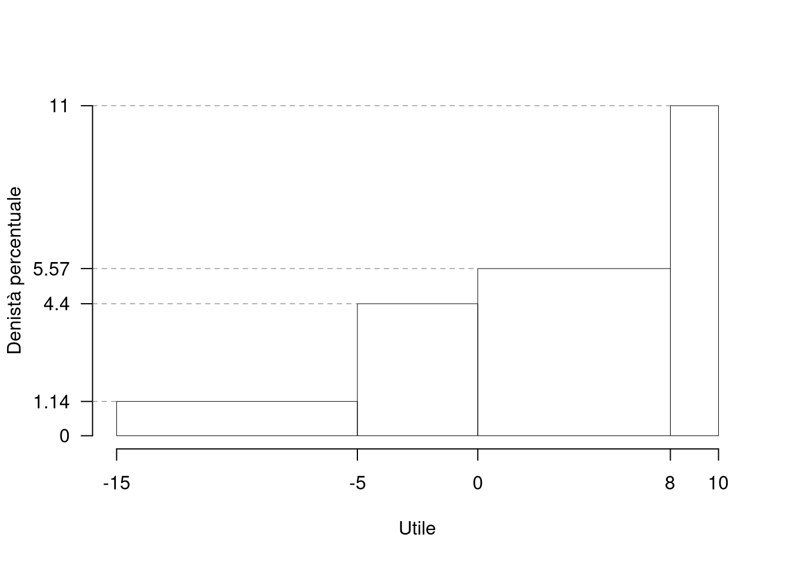| \([\text{x}_j,\) | \(\text{x}_{j+1})\) | \(h_j\) |
|---|---|---|
| -15 | -5 | 1.143 |
| -5 | 0 | 4.400 |
| 0 | 8 | 5.571 |
| 8 | 10 | 11.000 |
1.a (Punti 14/100 \(\rightarrow\) 4.34/31) Calcolare il valore approssimato della mediana.
Per individuare il 75-esimo percentile dobbiamo: \[ b_j=x_{j+1}-x_{j} \] le frequenze relative, \[ f_j=h_j\cdot b_j, \] le cumulate \[ F_j=f_1+...+f_j \] ricostruire la tabella
| \([\text{x}_j,\) | \(\text{x}_{j+1})\) | \(h_j\) | \(b_j\) | \(f_j\) | \(F_j\) |
|---|---|---|---|---|---|
| -15 | -5 | 1.143 | 10 | 0.1143 | 0.1143 |
| -5 | 0 | 4.400 | 5 | 0.2200 | 0.3343 |
| 0 | 8 | 5.571 | 8 | 0.4457 | 0.7800 |
| 8 | 10 | 11.000 | 2 | 0.2200 | 1.0000 |
| 25 | 1.0000 |
\[\begin{eqnarray*} p &=& 0.75 , \text{essendo }F_{ 3 }= 0.78 > 0.75 \Rightarrow j_{ 0.75 }= 3 \\ x_{ 0.75 } &=& x_{\text{inf}; 3 } + \frac{ { 0.75 } - F_{ 2 }} {f_{ 3 }} \cdot b_{ 3 } \\ &=& 0 + \frac {{ 0.75 } - 0.3343 } { 0.4457 } \cdot 8 \\ &=& 7.462 \end{eqnarray*}\]
1.b (Punti 3/100 \(\rightarrow\) 0.93/31) Qual è il numero di imprese con utile negativo?
\[\begin{eqnarray*} \%(X> 0 ) &=& ( 0 - 0 )\times h_{ 2 }+ f_{ 3 }\times 100+f_{ 4 }\times 100 \\ &=& ( 0 )\times 4.4 + ( 0.4457 )\times 100+( 0.22 )\times 100 \\ &=& 0.6657 \times(100)\\ \#(X> 0 ) &\approx& 233 \end{eqnarray*}\]
1.c (Punti 2/100 \(\rightarrow\) 0.62/31) L’utile medio è pari a \(\bar x=2.1489\), e la sua standard deviation \(\sigma_X=6.1195\). Se l’utile \(X\) viene trasformato in perdita \(Y\), \[ Y=-X, \] quanto valgono la media \(\bar y\) e la deviazione standard \(\sigma_Y\) di \(Y\)?.
\[ \bar y=-\bar x=-2.1489 \] mentre \[ \sigma_Y=\sigma_X=6.1195 \]
Esercizio 2
Nel supermercato \(S\) ci sono 4 casse \(C_1\), \(C_2\), \(C_3\) e \(C_4\). A mezzogiorno il numero di persone in fila ogni cassa è descritto da un Poisson di parametro 0.5, \(C_i\sim\text{Pois}(0.5),~i=1,...,4\). Si assume l’indipendenza tra le variabili.
2.a (Punti 14/100 \(\rightarrow\) 4.34/31) Calcolare la probabilità che le persone totali (\(C_1+...+C_4\)) in fila al supermercato a mezzogiorno, siano almeno due.
\[ X=C_1+...+C_4\sim \text{Pois}(2) \] e quindi
\[\begin{eqnarray*} P(X\ge 2)&=&1-P(X< 2)\\ &=&1-(P(X=0)+P(X=1))\\ &=&1-(0.1353+0.2707)\\ &=&0.594 \end{eqnarray*}\]
2.b (Punti 3/100 \(\rightarrow\) 0.93/31) Qual è la probabilità di avere esattamente due casse su quattro senza fila?
Posto \[ \pi = P(C_i=0)=\frac {0.5}{0!}e^{-0.5}=0.6065 \] la VC \(X\) che conta il numero di casse con zero persone in fila su 4 \[ X\sim\text{Binom}(4,0.6065) \] e quindi \[ P(X=2)=\binom{4}{2}0.6065^2(1-0.6065)^{4-2}=0.3417 \]
2.c (Punti 3/100 \(\rightarrow\) 0.93/31) Quando due eventi \(A\) e \(B\) si dicono indipendenti e quando incompatibili?
Se \(A\) e \(B\) sono incompatibili allora \[ P(A\cap B)=0, \] mentre se \(A\) e \(B\) sono indipendenti allora \[ P(A\cap B)=P(A)P(B), \]
2.d (Punti 2/100 \(\rightarrow\) 0.62/31) Se \(X_1\sim N(2,1)\), \(X_2\sim N(1,1)\) e \(X_3\sim N(1,1)\), \(X_1\), \(X_2\) e \(X_3\) indipendenti, come si distribuisce
\[ Y=X_1-(X_2+X_3) ~~~? \]
\[Y\sim N(2-(1+1),1+1+1)\sim N(0,3)\]
Esercizio 3
3.a (Punti 14/100 \(\rightarrow\) 4.34/31) Un’urna contiene \(4\) bussolotti Rossi, \(3\) bussolotti Blu e \(5\) bussolotti Gialli. Si estrae 60 volte con reintroduzione; qual è la probabilità che il numero di rossi in 60 estrazioni sia maggiore di 21?
\[\pi=\frac 4{12}=\frac 13\] Teorema del Limite Centrale (somma di Bernoulli)
Siano \(X_1\),…,\(X_n\), \(n=60\) VC IID, tc \(X_i\sim\text{Ber}(\pi=0.3333)\)\(,\forall i\), posto: \[ S_n = X_1 + ... + X_n \] allora:\[\begin{eqnarray*} S_n & \mathop{\sim}\limits_{a}& N(n\pi,n\pi(1-\pi)) \\ &\sim & N(60\cdot0.3333,60\cdot0.3333\cdot(1-0.3333)) \\ &\sim & N(20,13.33) \end{eqnarray*}\]\[\begin{eqnarray*} P( S_n > 21 ) &=& P\left( \frac { S_n - n\pi }{ \sqrt{n\pi(1-\pi)} } > \frac { 21 - 20 }{\sqrt{ 13.33 }} \right) \\ &=& P\left( Z > 0.27 \right) \\ &=& 1-P(Z< 0.27 )\\ &=& 1-\Phi( 0.27 ) \\ &=& 0.3936 \end{eqnarray*}\]
Esercizio 4
4.a (Punti 3/100 \(\rightarrow\) 0.93/31) Sia \(h\) uno stimatore per theta, tale che \[ E(h)=\theta+\frac\theta {\sqrt{ n}} \] \(h\) è corretto? \(h\) è asintoticamente corretto?
\(h\) non è corretto, infatti \[ E(h)=\theta+\frac\theta {\sqrt{ n}}\neq\theta \] \(h\) è asintoticamente corretto, infatti \[ \lim_{n\to\infty}E(h)=\lim_{n\to\infty}\left(\theta+\frac\theta {\sqrt{ n}}\right)=\theta+0=\theta \]
4.b (Punti 3/100 \(\rightarrow\) 0.93/31) Siano \(h_1\) e \(h_2\) due stimatori per \(\theta\), tali che: \[\begin{eqnarray*} MSE(h_1) &=& \frac\theta n\\ MSE(h_2) &=& \frac{2\theta} n \end{eqnarray*}\] Quale dei due stimatori è più efficiente? Perché?
\(h_1\) è più efficiente di \(h_2\), infatti \[\begin{eqnarray*} MSE(h_1) &=& \frac\theta n\\ MSE(h_2) &=& \frac{2\theta} n =2\cdot MSE(h_1)>MSE(h_1) \end{eqnarray*}\]
4.c (Punti 3/100 \(\rightarrow\) 0.93/31) Si sono osservati due gruppi di dati quantitativi e si è osservato, \(\hat\mu_1=10.2\) e \(\hat\mu_2=15.6\). Posto a test \[ \begin{cases} H_0:\mu_1=\mu_2\\ H_1:\mu_1\ne \mu_2 \end{cases} \] è risultato \(p_\text{value}=0.0612\). La differenza tra \(\hat\mu_1\) e \(\hat\mu_2\) è significativa? Perché?
Il \(p_\text{value}\) è maggiore di 0.05, la differenza non è significativa per ogni livello di significatività.
Esercizio 5
5.a (Punti 14/100 \(\rightarrow\) 4.34/31) In uno studio comparato sui livelli di occupazione femminile, nel comune \(A\) sono state intervistate 50 donne e 30 hanno dichiarato di avere un lavoro stabile; nel comune \(B\) sono state intervistate 60 donne e 40 hanno dichiarato di avere un lavoro stabile.
Testare l’ipotesi che la proporzione di donne che hanno un lavoro stabile nel comune \(A\) sia uguale a quelle del come \(B\), contro l’alternativa che siano diverse.
Test \(Z\) per due proporzioni
\(\fbox{A}\) FORMULAZIONE DELLE IPOTESI
\[\begin{cases} H_0: \pi_\text{A} = \pi_\text{B} \\ H_1: \pi_\text{A} \neq \pi_\text{B} \end{cases}\]
\(\fbox{B}\) SCELTA E CALCOLO STATISTICA-TEST, \(Z\)
\[\hat\pi_\text{ A }=\frac{s_\text{ A }}{n_\text{ A }}=\frac{ 30 }{ 50 }= 0.6 \qquad \hat\pi_\text{ B }=\frac{s_\text{ B }}{n_\text{ B }}=\frac{ 40 }{ 60 }= 0.6667 \]Calcoliamo la proporzione comune sotto \(H_0\) \[ \pi_C=\frac{s_\text{ A }+s_\text{ B }}{n_\text{ A }+n_\text{ B }}= \frac{ 70 }{ 110 }= 0.6364 \]\[\begin{eqnarray*} \frac{\hat\pi_\text{ A } - \hat\pi_\text{ B }} {\sqrt{\frac {\pi_C(1-\pi_C)}{n_\text{ A }}+\frac {\pi_C(1-\pi_C)}{n_\text{ B }}}}&\sim&N(0,1)\\ z_{\text{obs}} &=& \frac{ ( 0.6 - 0.6667 )} {\sqrt{\frac{ 0.6364 (1- 0.6364 )}{ 50 }+\frac{ 0.6364 (1- 0.6364 )}{ 60 }}} = -0.7237 \, . \end{eqnarray*}\]
\(\fbox{C}\) CONCLUSIONE
Il \(p_{\text{value}}\) è
\[ p_{\text{value}} = P(|Z|>|-0.72|)=2P(Z>0.72)=0.469221 \]
\[ 0.1 < p_\text{value}= 0.469221 \leq 1 \]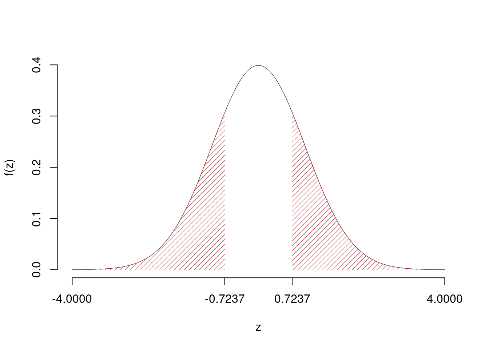
Non rifiuto \(H_0\) a nessun livello di significatività,
\(p_\text{value}>0.1\), non significativo
Esercizio 6
In uno studio sulle competenze scolastiche dei quindicenni si sono analizzati \(n=150\) ragazzi sui quali sono stati registrati i voti di un test in matematica \(X\) e i voti in un test di scienze \(Y\). Qui di seguito le statistiche di interesse:
\[\begin{align*} \sum_{i=1}^n x_i &= 1085, &\sum_{i=1}^n x_i^2 &= 8100 \\ \sum_{i=1}^n y_i &= 969, &\sum_{i=1}^n y_i^2 &= 6578 \\ \sum_{i=1}^n x_iy_i &= 7240. \\ \end{align*}\]
Si consideri il modello di regressione dove \(Y\) viene spiegata da \(X\)
6.a (Punti 14/100 \(\rightarrow\) 4.34/31) Prevedere il voto nel test di scienze per uno studente che ha ottenuto 6 nel test di matematica.
\[\begin{eqnarray*} \bar x &=&\frac 1 n\sum_{i=1}^n x_i = \frac {1}{ 150 } 1085 = 7.233 \\ \bar y &=&\frac 1 n\sum_{i=1}^n y_i = \frac {1}{ 150 } 969 = 6.46 \\ \hat\sigma_X^2&=&\frac 1 n\sum_{i=1}^n x_i^2-\bar x^2=\frac {1}{ 150 } 8100 - 7.2333 ^2= 1.679 \\ \hat\sigma_Y^2&=&\frac 1 n\sum_{i=1}^n y_i^2-\bar y^2=\frac {1}{ 150 } 6578 - 6.46 ^2= 2.122 \\ \text{cov}(X,Y)&=&\frac 1 n\sum_{i=1}^n x_i~y_i-\bar x\bar y=\frac {1}{ 150 } 7240 - 7.2333 \cdot 6.46 = 1.536 \\ \hat\beta_1 &=& \frac{\text{cov}(X,Y)}{\hat\sigma_X^2} \\ &=& \frac{ 1.536 }{ 1.679 } = 0.915 \\ \hat\beta_0 &=& \bar y - \hat\beta_1 \bar x\\ &=& 6.46 - 0.915 \times 7.2333 = -0.1583 \end{eqnarray*}\]
6.b (Punti 3/100 \(\rightarrow\) 0.93/31) Calcolare la percentuale di varianza spiegata dal modello.
\[\begin{eqnarray*} r&=&\frac{\text{cov}(X,Y)}{\sigma_X\sigma_Y}=\frac{ 1.536 }{ 1.296 \times 1.457 }= 0.8139 \\r^2&=& 0.6624 < 0.75 \end{eqnarray*}\] Il modello non si adatta bene ai dati.
6.c (Punti 3/100 \(\rightarrow\) 0.93/31) Discutere il qq-plot dei residui 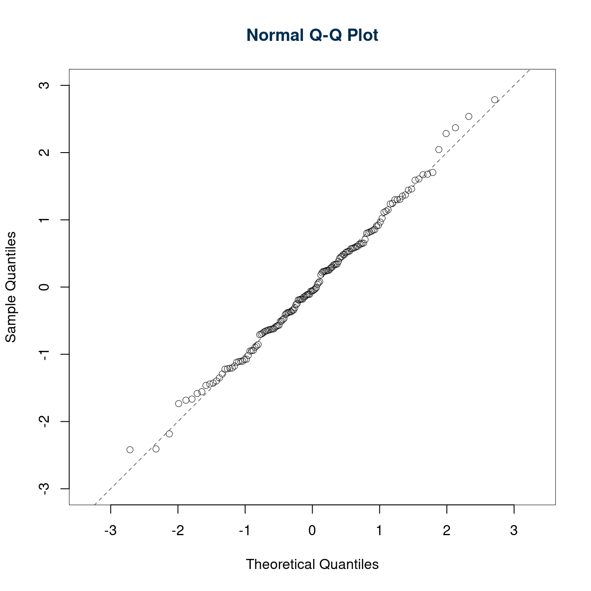
I punti sono be allineati sulla bisettrice degli assi, l’ipotesi di normalità dei residui è rispettata.
6.d (Punti 2/100 \(\rightarrow\) 0.62/31) Cosa vuol dire che \(r\) è un numero puro?
Significa che è privo di unità di misura.
Prova di Statistica 2021/06/11-2
Esercizio 1
Sono state registrate le temperature del comune \(C\) per \(n=200\) giorni. Qui di seguito l’istogramma di densità percentuale.
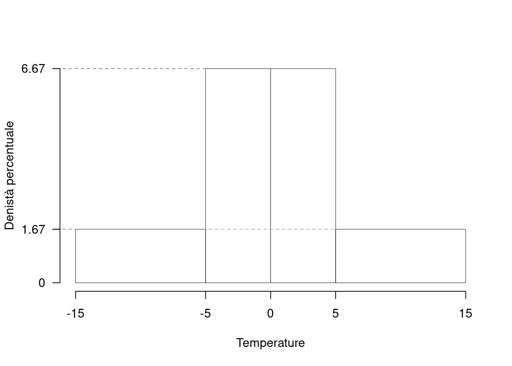| \([\text{x}_j,\) | \(\text{x}_{j+1})\) | \(h_j\) |
|---|---|---|
| -15 | -5 | 1.667 |
| -5 | 0 | 6.667 |
| 0 | 5 | 6.667 |
| 5 | 15 | 1.667 |
1.a (Punti 14/100 \(\rightarrow\) 4.34/31) Calcolare il valore approssimato del 25-esimo percentile.
Per individuare il 25-esimo percentile dobbiamo: \[ b_j=x_{j+1}-x_{j} \] le frequenze relative, \[ f_j=h_j\cdot b_j, \] le cumulate \[ F_j=f_1+...+f_j \] ricostruire la tabella
| \([\text{x}_j,\) | \(\text{x}_{j+1})\) | \(h_j\) | \(b_j\) | \(f_j\) | \(F_j\) |
|---|---|---|---|---|---|
| -15 | -5 | 1.667 | 10 | 0.1667 | 0.1667 |
| -5 | 0 | 6.667 | 5 | 0.3333 | 0.5000 |
| 0 | 5 | 6.667 | 5 | 0.3333 | 0.8333 |
| 5 | 15 | 1.667 | 10 | 0.1667 | 1.0000 |
| 30 | 1.0000 |
\[\begin{eqnarray*} p &=& 0.25 , \text{essendo }F_{ 2 }= 0.5 > 0.25 \Rightarrow j_{ 0.25 }= 2 \\ x_{ 0.25 } &=& x_{\text{inf}; 2 } + \frac{ { 0.25 } - F_{ 1 }} {f_{ 2 }} \cdot b_{ 2 } \\ &=& -5 + \frac {{ 0.25 } - 0.1667 } { 0.3333 } \cdot 5 \\ &=& -3.75 \end{eqnarray*}\]
1.b (Punti 3/100 \(\rightarrow\) 0.93/31) Analizzando l’istogramma, individuare il valore della media aritmetica e della mediana.
L’istogramma è perfettamente simmetrico \[ \bar x\approx x_{0.5}\approx 0 \]
1.c (Punti 2/100 \(\rightarrow\) 0.62/31) Qual è la percentuale di dati compresa tra il 25-esimo e il 75-esimo percentile?
Per definizione \[\begin{eqnarray*} \%(X\le x_{0.25})&=&25\%\\ \%(X\le x_{0.75})&=&75\%, \qquad\text{e quindi}\\ \%(x_{0.25}< X\le x_{0.75})&=&50\% \end{eqnarray*}\]
Esercizio 2
Il flusso giornaliero d’acqua in entrata nella vasca \(V\) è descritto da una variabile casuale normale \(X_E\sim N(5.1,1.1)\), il flusso giornaliero in uscita è descritto da una variabile casuale normale \(X_U\sim N(6.2,0.5)\).
La variazione di livello nella vasca è dunque data da: \[ X_L=X_E-X_U. \] 2.a (Punti 14/100 \(\rightarrow\) 4.34/31) Calcolare la probabilità che la variazione di livello sia negativa (\(X_L<0\)).
La variazione di livello nella vasca si distribuisce \[ X_L=X_E-X_U\sim N(5.1-6.2;1.1+0.5) \] E quindi
\[\begin{eqnarray*} P( X_L < 0 ) &=& P\left( \frac { X_L - \mu }{ \sigma } < \frac { 0 - ( -1.1 ) }{\sqrt{ 1.6 }} \right) \\ &=& P\left( Z < 0.87 \right) \\ &=& \Phi( 0.87 ) \\ &=& 0.8078 \end{eqnarray*}\]
2.b (Punti 3/100 \(\rightarrow\) 0.93/31) Nell’ipotesi di indipendenza tra i giorni, calcolare la probabilità di avere esattamente due giorni su cinque con livello negativo.
Posto \[ \pi = P(X_L=0)=0.8077 \] la VC \(X\) che conta il numero di giorni con livello negativo in 5 giorni \[ X\sim\text{Binom}(5,0.8077) \] e quindi
\[\begin{eqnarray*} P( X = 2 ) &=& \binom{ 5 }{ 2 } 0.8077 ^{ 2 }(1- 0.8077 )^{ 5 - 2 } \\ &=& 10 \times 0.8077 ^{ 2 }(1- 0.8077 )^{ 3 } \\ &=& 0.0464 \end{eqnarray*}\]
2.c (Punti 3/100 \(\rightarrow\) 0.93/31) Se \(P(A)=0.6\) e \(P(B)=0.8\), \(A\) e \(B\) possono essere incompatibili?
No, perché se fossero incompatibili allora \[ P(A\cup B)=P(A)+P(B)=0.6+0.8=1.4>1 \] che è impossibile.
2.d (Punti 2/100 \(\rightarrow\) 0.62/31) Se \(X\sim N(\mu_X,\sigma^2_X)\) come si distribuisce \[Y=\left(\frac{X-\mu_X}{\sigma_X}\right)^2 ~~~?\]
Anzitutto osserviamo che \[ Z=\frac{X-\mu_X}{\sigma_X}\sim N(0,1) \] Poi che \[ Y=Z^2\sim\chi_1^2 \]
Esercizio 3
3.a (Punti 14/100 \(\rightarrow\) 4.34/31) Un’urna contiene \(4\) bussolotti numerati con \(\fbox{−1}\), \(3\) numerati con \(\fbox{0}\) e \(4\) numerati con \(\fbox{+1}\). Si estrae 60 volte con reintroduzione; qual è la probabilità che la media delle 60 estrazioni sia minore di 0.1?
\[\begin{eqnarray*} \mu &=& E(X_i) = \sum_{x\in S_X}x P(X=x)\\ &=& ( -1 ) \frac { 4 }{ 11 }+ 0 \frac { 3 }{ 11 }+ 1 \frac { 4 }{ 11 } \\ &=& 0 \\ \sigma^2 &=& V(X_i) = \sum_{x\in S_X}x^2 P(X=x)-\mu^2\\ &=&\left( ( -1 ) ^2\frac { 4 }{ 11 }+ 0 ^2\frac { 3 }{ 11 }+ 1 ^2\frac { 4 }{ 11 } \right)-( 0 )^2\\ &=& 0.7273 \end{eqnarray*}\] Teorema del Limite Centrale (media VC qualunque)
Siano \(X_1\),…,\(X_n\), \(n=60\) VC IID, tc \(E(X_i)=\mu=0\) e \(V(X_i)=\sigma^2=0.7273,\forall i\), posto: \[ \bar X=\frac{S_n}n =\frac{X_1 + ... + X_n}n \] allora:\[\begin{eqnarray*} \bar X & \mathop{\sim}\limits_{a}& N(\mu,\sigma^2/n) \\ &\sim & N\left(0,\frac{0.7273}{60}\right) \\ &\sim & N(0,0.01212) \end{eqnarray*}\]\[\begin{eqnarray*} P( \bar X < 0.1 ) &=& P\left( \frac { \bar X - \mu }{ \sqrt{\sigma^2/n} } < \frac { 0.1 - 0 }{\sqrt{ 0.01212 }} \right) \\ &=& P\left( Z < 0.91 \right) \\ &=& \Phi( 0.91 ) \\ &=& 0.8186 \end{eqnarray*}\]
Esercizio 4
4.a (Punti 3/100 \(\rightarrow\) 0.93/31) Sia \(h\) uno stimatore per \(\theta\), tale che \[ MSE(h)=\frac\theta {\sqrt{ n}}+\frac1n \] \(h\) è consistente? Perché?
Sì, è consistente, infatti \[ \lim_{n\to\infty}MSE(h)=\lim_{n\to\infty}\left(\frac\theta {\sqrt{ n}}+\frac1n\right)=0 \]
4.b (Punti 3/100 \(\rightarrow\) 0.93/31) Siano \(X_1,...,X_n\) \(n\) VC IID, replicazioni di \(X\sim \mathscr{L}(\theta)\) e sia \(\hat\theta\) lo stimatore di massima verosimiglianza per \(\theta\), \(\hat\theta\) è corretto?
No, in generale \(\hat\theta\) non è corretto, ad esempio \[ E(\hat\sigma^2)=\frac{n-1}n\sigma^2\ne\sigma^2 \] ma lo è sempre asintoticamente \[ \lim_{n\to\infty}E(\hat\theta)=\theta \] ad esempio: \[ \lim_{n\to\infty}E(\hat\sigma^2)=\lim_{n\to\infty}\frac{n-1}n\sigma^2=\sigma^2 \]
4.c (Punti 3/100 \(\rightarrow\) 0.93/31) Definire la significatività e la potenza di un test.
La probabilità di significatività è definita con \(\alpha\) e rappresenta la probabilità di rifiutare \(H_0\) quando è vera \[\alpha=P(\text{Errore I tipo})=P(\text{Decidere $H_1$};H_0)\]
La potenza del test è definita \[1-\beta =P(\text{Decidere $H_1$}; H_1)\]
Cioè la probabilità di scegliere \(H_1\) quando \(H_1\) è vera.
Esercizio 5
5.a (Punti 14/100 \(\rightarrow\) 4.34/31) In uno studio comparato sul reddito femminile, nel comune \(A\) sono state intervistate 15 donne e si è osservato un reddito medio pari a \(\bar x_A=23.2\) mila euro lordi annui con una standard deviation pari a \(\hat\sigma_A=2.2\); nel comune \(B\) sono state intervistate 18 donne e si è osservato un reddito medio pari a \(\bar x_B=20.1\) mila euro lordi annui con una standard deviation pari a \(\hat\sigma_B=1.8\).
Sotto ipotesi di omogeneità, testare l’ipotesi che il reddito medio femminile nel comune \(A\) sia uguale a quello del comune \(B\), contro l’alternativa che siano diversi.
Test \(T\) per due medie, (omogeneità)
\(\fbox{A}\) FORMULAZIONE DELLE IPOTESI
\[\begin{cases} H_0: \mu_\text{A} = \mu_\text{B} \\ H_1: \mu_\text{A} \neq \mu_\text{B} \end{cases}\]
\(\fbox{B}\) SCELTA E CALCOLO STATISTICA-TEST, \(T\)
L’ipotesi è di omogeneità e quindi calcoliamo:\[ S_p^2=\frac{n_\text{ A }\hat\sigma^2_\text{ A }+n_\text{ B }\hat\sigma^2_\text{ B }}{n_\text{ A }+n_\text{ B }-2} = \frac{ 15 \cdot 2.2 ^2+ 18 \cdot 1.8 ^2}{ 15 + 18 -2}= 4.223 \]
\[\begin{eqnarray*} \frac{\hat\mu_\text{ A } - \hat\mu_\text{ B }} {\sqrt{\frac {S^2_p}{n_\text{ A }}+\frac {S^2_p}{n_\text{ B }}}}&\sim&t_{n_\text{ A }+n_\text{ B }-2}\\ t_{\text{obs}} &=& \frac{ ( 23.2 - 20.1 )} {\sqrt{\frac{ 5.186 }{ 15 }+\frac{ 3.431 }{ 18 }}} = 4.315 \, . \end{eqnarray*}\]
\(\fbox{C}\) CONCLUSIONE
Siccome \(H_1\) è bilaterale, considereremo \(\alpha/2\), anziché \(\alpha\)
\(\alpha=0.1, 0.05, 0.01, 0.001\) e quindi \(\alpha/2=0.05, 0.025, 0.005, 0.0005\)
I valori critici sono
\(t_{33-2;0.05}=1.6955\); \(t_{33-2;0.025}=2.0395\); \(t_{33-2;0.005}=2.744\); \(t_{33-2;0.0005}=3.6335\)
Siccome \(|t_\text{obs}|=4.3148>3.6335\), quindi rifiuto \(H_0\) sotto all’1‰,
\(p_\text{value}<0.001\), estremamente significativo \(\fbox{***}\).
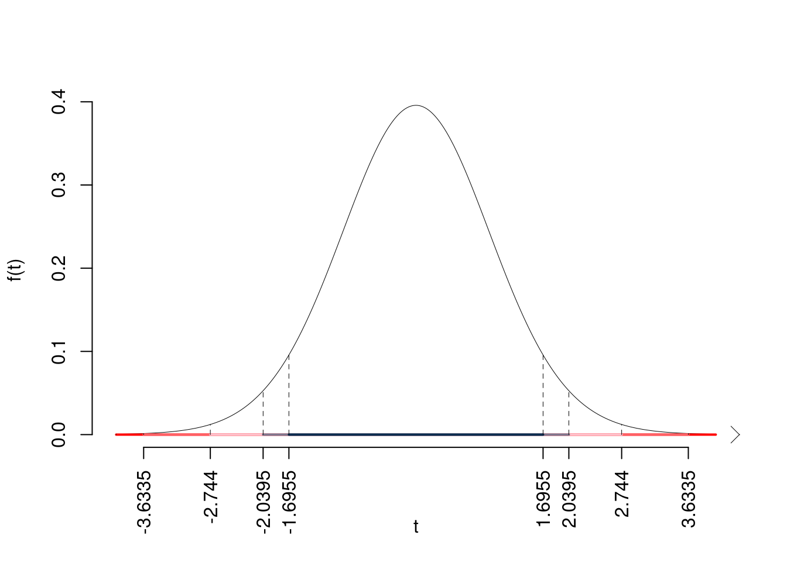
Il \(p_{\text{value}}\) è
\[ p_{\text{value}} = P(|T_{33-2}|>|4.31|)=2P(T_{33-2}>4.31)=0.000151 \]
Attenzione il calcolo del \(p_\text{value}\) con la \(T\) è puramente illustrativo e non può essere riprodotto senza una calcolatrice statistica adeguata.\[ 0 < p_\text{value}= 0.000151 \leq 0.001 \]
Esercizio 6
In uno studio sulle competenze scolastiche dei quindicenni si sono analizzati \(n=150\) ragazzi sui quali sono stati registrati il numero di libri in casa \(X\) (espresso in decine di libri) e i voti in un test di comprensione \(Y\). Qui di seguito le statistiche di interesse:
\[\begin{align*} \sum_{i=1}^n x_i &= 1129, &\sum_{i=1}^n x_i^2 &= 8823 \\ \sum_{i=1}^n y_i &= 1014, &\sum_{i=1}^n y_i^2 &= 7151 \\ \sum_{i=1}^n x_iy_i &= 7923. \\ \end{align*}\]
Si consideri il modello di regressione dove \(Y\) viene spiegata da \(X\)
6.a (Punti 14/100 \(\rightarrow\) 4.34/31) Si osservino le prime 5 coppie di dati| i | Libri | Voto |
|---|---|---|
| 1 | 5.006 | 4.504 |
| 2 | 5.108 | 4.557 |
| 3 | 5.126 | 4.618 |
| 4 | 5.155 | 4.691 |
| 5 | 5.187 | 4.644 |
Calcolare il residuo per il quarto dato.
\[\begin{eqnarray*} \bar x &=&\frac 1 n\sum_{i=1}^n x_i = \frac {1}{ 150 } 1129 = 7.527 \\ \bar y &=&\frac 1 n\sum_{i=1}^n y_i = \frac {1}{ 150 } 1014 = 6.76 \\ \hat\sigma_X^2&=&\frac 1 n\sum_{i=1}^n x_i^2-\bar x^2=\frac {1}{ 150 } 8823 - 7.5267 ^2= 2.169 \\ \hat\sigma_Y^2&=&\frac 1 n\sum_{i=1}^n y_i^2-\bar y^2=\frac {1}{ 150 } 7151 - 6.76 ^2= 1.976 \\ \text{cov}(X,Y)&=&\frac 1 n\sum_{i=1}^n x_i~y_i-\bar x\bar y=\frac {1}{ 150 } 7923 - 7.5267 \cdot 6.76 = 1.94 \\ \hat\beta_1 &=& \frac{\text{cov}(X,Y)}{\hat\sigma_X^2} \\ &=& \frac{ 1.94 }{ 2.169 } = 0.8942 \\ \hat\beta_0 &=& \bar y - \hat\beta_1 \bar x\\ &=& 6.76 - 0.8942 \times 7.5267 = 0.02957 \end{eqnarray*}\]\[\begin{eqnarray*} \hat y_i &=&\hat\beta_0+\hat\beta_1 x_i=\\ &=& 0.02957 + 0.8942 \times 5.1551 = 4.639 \\ \hat \varepsilon_i &=& y_i-\hat y_i\\ &=& 4.691 - 4.639 = 0.05188 \end{eqnarray*}\]
6.b (Punti 3/100 \(\rightarrow\) 0.93/31) Il modello si adatta bene ai dati?
Il modello spiega il \(r^2\times100=(0.937)^2\times 100=87.7948\%>75\%\) della viarbilità totale di \(Y\). Sì, il modello spiega bene i dati.
6.c (Punti 3/100 \(\rightarrow\) 0.93/31) Discutere il diagramma dei residui 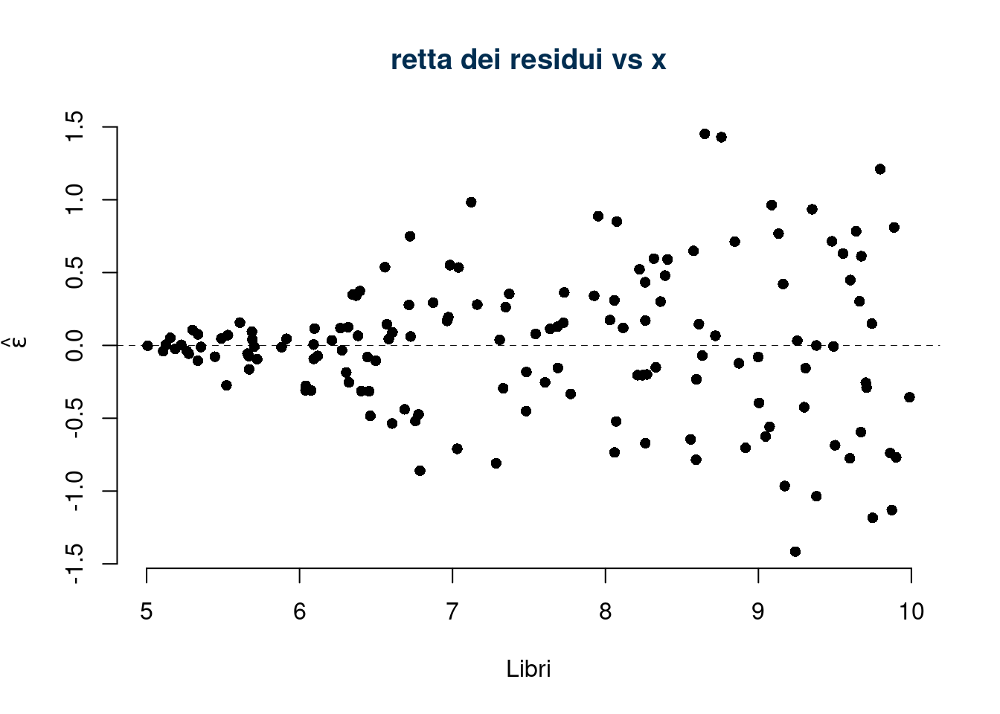
La variabilità dei residui cresce al crescere dalla x, l’ipotesi di omoschedasticità è chiaramente violata.
6.d (Punti 2/100 \(\rightarrow\) 0.62/31) Quando in un modello di regressione lineare un punto è considerato influente?
La coppia \((x_i,y_i)\) è considerata punto influente se il suo residuo studentizzato è maggiore di un livello soglia deciso sulle tavole della \(t\) con \(n-2\) gradi di libertà: \[|\tilde \varepsilon_i|>t_{n-2,0.05} \]
Prova di Statistica 2021/06/30-1
Esercizio 1
Su un campione di \(350\) aziende è stato rilevato il costo in spese legali (espresso in migliaia di euro). Qui di seguito i dati in classi e le frequenze cumulate:| \([\text{x}_j,\) | \(\text{x}_{j+1})\) | \(F_j\) |
|---|---|---|
| 0 | 5 | 0.0943 |
| 5 | 8 | 0.4543 |
| 8 | 13 | 0.8171 |
| 13 | 20 | 1.0000 |
1.a (Punti 14/101 \(\rightarrow\) 4.3/31) Individuare la classe modale.
| \([\text{x}_j,\) | \(\text{x}_{j+1})\) | \(F_j\) | \(f_j\) | \(b_j\) | \(h_j\) |
|---|---|---|---|---|---|
| 0 | 5 | 0.0943 | 0.0943 | 5 | 1.886 |
| 5 | 8 | 0.4543 | 0.3600 | 3 | 12.000 |
| 8 | 13 | 0.8171 | 0.3629 | 5 | 7.257 |
| 13 | 20 | 1.0000 | 0.1829 | 7 | 2.612 |
| 1.0000 | 20 |
e osservare che la classe \([5,8)\) è la classe modale perché è quella con densità maggiore.
1.b (Punti 3/101 \(\rightarrow\) 0.92/31) Calcolare la percentuale approssimata di aziende con spese maggiori di 10 mila euro.
\[\begin{eqnarray*} \%(X> 10 ) &=& ( 13 - 10 )\times h_{ 3 }+ f_{ 4 }\times 100 \\ &=& ( 3 )\times 7.257 + ( 0.1829 )\times 100 \\ &=& 0.4006 \times(100)\\ \#(X> 10 ) &\approx& 140 \end{eqnarray*}\]
1.c (Punti 3/101 \(\rightarrow\) 0.92/31) Calcolare la percentuale approssimata di aziende con spese maggiori di 10 mila euro.
La mediana \(x_{0.5}\) è il minimante
\[ \sum_{i=1}^n|x_i-x_{0.5}|<\sum_{i=1}^n|x_i-x^*|, ~~\forall x^*\neq x_{0.5} \]
Esercizio 2
L’urna \(A\) contiene 4 palline numerate: \(\fbox{-1},\fbox{0},\fbox{0},\fbox{+1}\).
L’urna \(B\) contiene 3 palline numerate: \(\fbox{0},\fbox{1},\fbox{2}\).
Si estrae dall’urna \(A\) e dall’urna \(B\) e si sommano i due numeri
2.a (Punti 14/101 \(\rightarrow\) 4.3/31) Calcolare la probabilità che la somma dei numeri sia maggiore uguale a 2.
\[ \begin{array}{ r|rrrrrr } & -1 ;&\color{blue}{ \frac{ 1 } { 4 }} & 0 ;&\color{blue}{ \frac{ 2 } { 4 }} & 1 ;&\color{blue}{ \frac{ 1 } { 4 }} \\ \hline 1 ;\color{blue}{ 1 / 3 }& 0;&\color{red}{\frac{1}{12}}& 1;&\color{red}{\frac{2}{12}}& 2;&\color{red}{\frac{1}{12}}\\ 2 ;\color{blue}{ 1 / 3 }& 1;&\color{red}{\frac{1}{12}}& 2;&\color{red}{\frac{2}{12}}& 3;&\color{red}{\frac{1}{12}}\\ \end{array} \]
E ricaviamo la distribuzione di, X
\[ \begin{array}{ r|rrrr } X & 0& 1& 2& 3 \\ \hline P( X ) & \frac{2}{12}& \frac{4}{12}& \frac{4}{12}& \frac{2}{12} \\ \end{array} \] Calcoliamo valore atteso e varianza
\[\begin{eqnarray*} \mu &=& E(X_i) = \sum_{x\in S_X}x P(X=x)\\ &=& 0 \frac { 2 }{ 12 }+ 1 \frac { 4 }{ 12 }+ 2 \frac { 4 }{ 12 }+ 3 \frac { 2 }{ 12 } \\ &=& 1.5 \\ \sigma^2 &=& V(X_i) = \sum_{x\in S_X}x^2 P(X=x)-\mu^2\\ &=&\left( 0 ^2\frac { 2 }{ 12 }+ 1 ^2\frac { 4 }{ 12 }+ 2 ^2\frac { 4 }{ 12 }+ 3 ^2\frac { 2 }{ 12 } \right)-( 1.5 )^2\\ &=& 0.9167 \end{eqnarray*}\] \[ P(S\ge 2)=3/12+1/12=4/12=1/3 \]
2.b (Punti 3/101 \(\rightarrow\) 0.92/31) Calcolare la probabilità che la somma sia maggiore uguale a 1 dato che dall’urna \(A\) è uscito \(\fbox{0}\).
Dalla definizione stessa di probabilità condizionata \[\begin{eqnarray*} P(X\geq 1|X_A=0)&=&\frac{P(\{X\geq 1\}\cap\{X_A=0\})}{P(\{X_A=0\})}\\ &=&\frac{2/12+2/12}{2/4}\\ &=&4/12\cdot4/2\\ &=&0.6667 \end{eqnarray*}\]
2.c (Punti 3/101 \(\rightarrow\) 0.92/31) Sia \(X\sim \text{Pois}(10)\) e \(Y\sim\text{Binom}(n,0.5)\). Sia \[ W=X-Y \] Calcolare il valore atteso \(E(W)\) e la varianza \(V(W)\) di \(W\).
Osserviamo \[\begin{align*} E(X)&=10 &E(Y)&=n\cdot 0.5\\ V(X)&=10 &V(Y)&=n\cdot0.5(1-0.5) \end{align*}\] e quindi \[\begin{eqnarray*} E(W)&=&E(X)-E(Y)\\ &=&10-n\cdot 0.5\\ V(W)&=&V(X)+V(Y),\qquad\text{se e solo se $X$ e $Y$ sono indipendenti}\\ &=&10+n\cdot 0.25 \end{eqnarray*}\]
2.d (Punti 2/101 \(\rightarrow\) 0.61/31) Siano \(X_1,...,X_6\), \(6\) variabili casuali IID, tali che \[ X_i\sim N\left(2.5,3^2\right). \] Come si distribuisce \[ Y=\sum_{i=1}^6\left(\frac{X_i-2.5}{3}\right)^2~~? \]
Si osserva \[ Z_i=\frac{X_i-2.5}{3}\sim N(0,1) \] e quindi \[ Y=(Z_1^2+...+Z_6^2)\sim\chi_6^2 \]
Esercizio 3
3.a (Punti 14/101 \(\rightarrow\) 4.3/31) Si lancia un dado perfetto, si vince se esce un numero maggiore o uguale a 5. Si gioca \(n=64\) volte, qual è la probabilità di vincere più di 23 volte su 64 giocate?
\[ \pi=\frac 2 6=\frac 13 \] la probabilità di vincere all’estrazione \(i\), e quindi \(X_i\sim\text{Ber}(\pi)\)
\[\begin{eqnarray*} E(X_i)&=&\pi\\ V(X_i)&=&\pi(1-\pi) \end{eqnarray*}\]
In virtù del TCL della somma di n VC IID
Teorema del Limite Centrale (somma di Bernoulli)
Siano \(X_1\),…,\(X_n\), \(n=64\) VC IID, tc \(X_i\sim\text{Ber}(\pi=0.3333)\)\(,\forall i\), posto: \[ S_n = X_1 + ... + X_n \] allora:\[\begin{eqnarray*} S_n & \mathop{\sim}\limits_{a}& N(n\pi,n\pi(1-\pi)) \\ &\sim & N(64\cdot0.3333,64\cdot0.3333\cdot(1-0.3333)) \\ &\sim & N(21.33,14.22) \end{eqnarray*}\]\[\begin{eqnarray*} P( S_n > 23 ) &=& P\left( \frac { S_n - n\pi }{ \sqrt{n\pi(1-\pi)} } > \frac { 23 - 21.33 }{\sqrt{ 14.22 }} \right) \\ &=& P\left( Z > 0.44 \right) \\ &=& 1-P(Z< 0.44 )\\ &=& 1-\Phi( 0.44 ) \\ &=& 0.33 \end{eqnarray*}\]
Esercizio 4
4.a (Punti 3/101 \(\rightarrow\) 0.92/31) Sia \(h\) uno stimatore per \(\theta\), tale che \[\begin{eqnarray*} E(h)&=&\theta+\frac\theta {\sqrt{ n}}\\ V(h)&=&\frac{\theta^2}{\sqrt n} \end{eqnarray*}\] \(h\) è consistente?
Uno stimatore è consistente se \[ \lim_{n\to\infty} MSE(h)=0 \] Essendo \[\begin{eqnarray*} MSE(h)&=&V(h)+B^2(h)\\ &=&V(h)+|E(h)-\theta|^2\\ &=&\frac{\theta^2}{\sqrt n}+\left|\theta+\frac\theta {\sqrt{ n}}-\theta\right|^2\\ &=&\frac{\theta^2}{\sqrt n}+\frac{\theta^2} { n}\\ \lim_{n\to\infty} \left(\frac{\theta^2}{\sqrt n}+\frac{\theta^2} { n}\right)&=&0 \end{eqnarray*}\] Quindi sì, \(h\) è consistente.
4.b (Punti 3/101 \(\rightarrow\) 0.92/31) Definire la funzione di verosimiglianza.
Siano \(x_1,...,x_n\) \(n\) osservazioni di \(X\sim \mathscr{L}(\theta)\), \(\theta\in\Theta\), si definisce la verosimiglianza \(L\) di \(\theta\) la funzione: \[L(\theta;x_1,...,x_n)=L(\theta)\propto P(X_1=x_1,...,X_n=x_n;\theta)\]
Se \(x_1,..,x_n\) sono osservazioni \(IID\) otteniamo \[\begin{eqnarray*} L(\theta) &\propto& P(X_1=x_1;\theta)\cdot...\cdot P(X_n=x_n;\theta) \\ &\propto& \prod_{i=1}^n f(x_i;\theta) \end{eqnarray*}\]
4.c (Punti 3/101 \(\rightarrow\) 0.92/31) Si sono osservati due gruppi di dati quantitativi e si è osservato, \(\hat\mu_1=10.2\), \(\hat\sigma_1=1.12\) e \(\hat\mu_2=15.6\), \(\hat\sigma_2=3.72\). Posto a test \[ \begin{cases} H_0:\sigma_1=\sigma_2\\ H_1:\sigma_1\ne \sigma_2 \end{cases} \] è risultato \(p_\text{value}=0.0012\). I due gruppi sono da considerare omogenei o eterogenei? Perché?
Il \(p_\text{value}=0.0012\) ci indica che i dati supportano \(H_1\), quindi i due gruppi sono da considerarsi eterogenei.
Esercizio 5
5.a (Punti 14/101 \(\rightarrow\) 4.3/31) In uno studio sui consumi sono stati intervistati \(n=25\) individui sui quali è stato rilevato il reddito mensile \(X\) (in migliaia di euro), e il consumo \(Y\) (in migliaia di euro). Il modello di regressione \[ Y_i=\beta_0+\beta_1 x_i+\varepsilon_i \] ha fornito i seguenti risultati
\[\begin{align*} \hat\beta_0&=0.60, &\hat\beta_1&=0.75, &r&=0.87\\ \bar x&=1.61 &\hat \sigma_X&=0.90\\ \bar y&=1.81 &\hat \sigma_Y&=0.78\\ \end{align*}\]
Testare l’ipotesi che il consumo di sussistenza \(\beta_0\) sia uguale 0.5 contro l’alternativa che sia maggiore.
\[\begin{eqnarray*} \hat{\sigma_\varepsilon}^2&=&(1-r^2)\hat\sigma_Y^2\\ &=& (1- 0.7569 )\times 0.6084 \\ &=& 0.1479 \\ S_\varepsilon^2 &=& \frac{n} {n-2} \hat{\sigma_\varepsilon}^2\\ &=& \frac{ 25 } { 25 -2} \hat{\sigma_\varepsilon}^2 \\ &=& \frac{ 25 } { 25 -2} \times 0.1479 = 0.1608 \end{eqnarray*}\]
E quindi\[\begin{eqnarray*} V(\hat\beta_{0}) &=& \sigma_{\varepsilon}^{2} \left( \frac{1} {n} + \frac{\bar{x}^{2}} {n \hat{\sigma}^{2}_{X}} \right)\\ \widehat{V(\hat\beta_{0})} &=& S_{\varepsilon}^{2}\left( \frac{1} {n} + \frac{\bar{x}^{2}} {n \hat{\sigma}^{2}_{X}} \right)\ \\ &=& 0.1608 \times\left( \frac{1} { 25 } + \frac{ 1.61 ^{2}} { 25 \times 0.81 } \right)\\ \widehat{SE(\hat\beta_{0})} &=& \sqrt{ 0.02701 }\\ &=& 0.1643 \end{eqnarray*}\] \(\fbox{A}\) FORMULAZIONE DELLE IPOTESI
\[\begin{cases} H_0: \beta_0 = \beta_{0;H_0}=0.5 \\ H_1: \beta_0 > \beta_{0;H_0}=0.5 \end{cases}\]
\(\fbox{B}\) SCELTA E CALCOLO STATISTICA-TEST, \(T\) Test su un coefficiente di regressione: \(\Rightarrow\) t-Test.
\[\begin{eqnarray*} \frac{\hat\beta_{ 0 } - \beta_{ 0 ;H_0}} {\widehat{SE(\hat\beta_{ 0 })}}&\sim&t_{n-2}\\ t_{\text{obs}} &=& \frac{ ( 0.5961 - 0.5 )} { 0.1643 } = 0.5845 \, . \end{eqnarray*}\]
\(\fbox{C}\) CONCLUSIONE
Consideriamo \(\alpha=0.1, 0.05, 0.01, 0.001\)
I valori critici sono
\(t_{25-2;0.1}=1.3195\); \(t_{25-2;0.05}=1.7139\); \(t_{25-2;0.01}=2.4999\); \(t_{25-2;0.001}=3.485\)
Siccome \(t_\text{obs}=0.5845<t_{25-2;0.1}=1.3195\), quindi non rifiuto \(H_0\) a nessun livello di significatività,
\(p_\text{value}>0.1\), non significativo
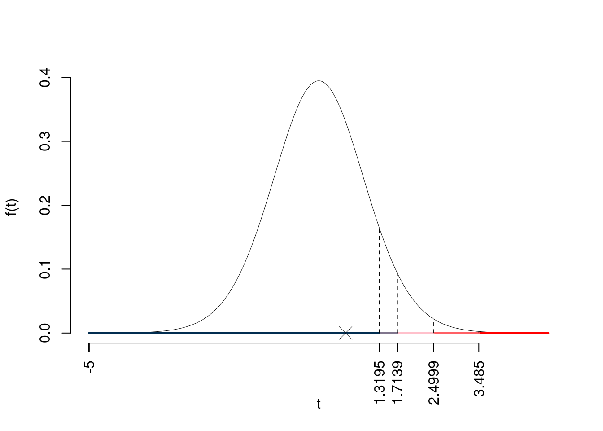
Il \(p_{\text{value}}\) è
\[ p_{\text{value}} = P(T_{25-2}>0.58)=0.282285 \]
Attenzione il calcolo del \(p_\text{value}\) con la \(T\) è puramente illustrativo e non può essere riprodotto senza una calcolatrice statistica adeguata.\[ 0.1 < p_\text{value}= 0.282285 \leq 1 \]
Esercizio 6
In uno studio sui consumi sono stati intervistati \(n=75\) individui sui quali è stato rilevato il reddito mensile \(X\) (in migliaia di euro), e il consumo \(Y\) (in migliaia di euro). Il modello di regressione. Qui di seguito le statistiche di interesse:
\[\begin{align*} \bar x&=4.126 &\hat \sigma_X&=2.6036, &x_{(0)}&=0.0052, &x_{(n)}&=9.5485,\\ \bar y&=3.5692 &\hat \sigma_Y&=2.6833, &y_{(0)}&=0.0718, &y_{(n)}&=11.008,\\ \text{cov}(X,Y)&=5.8726. \end{align*}\]
Si consideri il modello di regressione dove \(Y\) viene spiegata da \(X\)
6.a (Punti 14/101 \(\rightarrow\) 4.3/31) Prevedere il consumo per un individuo che guadagna \(x=4.126\) e per un individuo che guadagna \(x=12.3\).
\[\begin{eqnarray*} \hat\beta_1 &=& \frac{\text{cov}(X,Y)}{\hat\sigma_X^2} \\ &=& \frac{ 5.873 }{ 6.826 } = 0.8604 \\ \hat\beta_0 &=& \bar y - \hat\beta_1 \bar x\\ &=& 3.573 - 0.8604 \times 4.12 = 0.02856 \end{eqnarray*}\]\[\hat y_{X= 12.3 }=\hat\beta_0+\hat\beta_1 x= 0.02856 + 0.8604 \times 12.3 = 10.61 \]
6.b (Punti 3/101 \(\rightarrow\) 0.92/31) Quale delle due previsioni, per \(x=4.126\) e per \(x=12.3\), è più affidabile? Perché?
L’errore di previsione per \(x\) dipende dalla sua distanza quadratica dalla media \[ \text{err prev}(x)=V(\hat Y_{(X=x)})=\sigma_{\varepsilon}^{2}\left(\frac 1n+\frac{(x-\bar x)^2} {n \hat{\sigma}^{2}_{X}} \right) \] quindi l’errore di previsione è minimo per \(x=4.126\), mentre \(x=12.3>x_{(n)}=9.5485\) e si tratta di estrapolazione.
La previsione per \(x=4.126\) è molto più affidabile che quella per \(x=12.3\).
6.c (Punti 3/101 \(\rightarrow\) 0.92/31) Calcolare le quantità \(TSS\), \(RSS\) e \(ESS\).
Ricaviamo \(R^2\) \[R^2=\left(\frac{5.8726}{2.6036\cdot 2.6833}\right)^2=0.8398^2=0.7052\] quindi \[\begin{eqnarray*} TSS &=& n\hat\sigma^2_Y\\ &=& 75 \times 7.165 \\ &=& 537.3 \\ ESS &=& R^2\cdot TSS\\ &=& 0.7052 \cdot 537.3 \\ &=& 379 \\ RSS &=& (1-R^2)\cdot TSS\\ &=& (1- 0.7052 )\cdot 537.3 \\ &=& 158.4 \\ TSS &=& ESS+RSS \\ 537.3 &=& 379 + 158.4 \end{eqnarray*}\]
6.d (Punti 2/101 \(\rightarrow\) 0.61/31) Cosa vuol dire che \(r\) è invariante ai cambiamenti di scala?
\[\text{se }W=a+bY,\text{allora }r_{X,W}=\text{sign}(b) r_{XY},\text{ dove la funzione sign}(b)= \begin{cases}+1, &\text{se $b>0$}\\ -1, &\text{se $b<0$} \end{cases}\]
Prova di Statistica 2021/06/30-2
Esercizio 1
Su un campione di \(12\) famiglie della provincia \(Q\) è stato rilevato il reddito mensile, qui di seguito i dati non ordinati espressi in migliaia di euro al mese.
| \(i\) | \(x_{i}\) | \(i\) | \(x_{i}\) | \(i\) | \(x_{i}\) |
|---|---|---|---|---|---|
| \(1\) | 3.7 | \(5\) | 6.5 | \(9\) | 0.3 |
| \(2\) | 12.6 | \(6\) | 1.6 | \(10\) | 14.0 |
| \(3\) | 4.3 | \(7\) | 4.8 | \(11\) | 17.2 |
| \(4\) | 3.8 | \(8\) | 4.7 | \(12\) | 16.2 |
1.a (Punti 14/100 \(\rightarrow\) 4.34/31) Individuare il 25-esimo, 50-esimo e l’75-esimo percentile
| \(i\) | \(x_{i}\) | \(i\) | \(x_{i}\) | \(i\) | \(x_{i}\) |
|---|---|---|---|---|---|
| \((1)\) | 0.3 | \((5)\) | 4.3 | \((9)\) | 12.6 |
| \((2)\) | 1.6 | \((6)\) | 4.7 | \((10)\) | 14.0 |
| \((3)\) | 3.7 | \((7)\) | 4.8 | \((11)\) | 16.2 |
| \((4)\) | 3.8 | \((8)\) | 6.5 | \((12)\) | 17.2 |
e quindi
\[\begin{eqnarray*} x_{0.25} &=& x_{(\lceil n\times0.25\rceil)}=x_{(3)}=3.7\\ x_{0.50} &=& \frac{x_{(n/2)}+x_{(n/2+1)}}{2}=\frac{4.7+4.8}{2} =4.75\\ x_{0.75} &=& x_{(\lceil n\times0.75\rceil)}=x_{(9)}=12.6 \end{eqnarray*}\]
1.b (Punti 3/100 \(\rightarrow\) 0.93/31) La somma dei dati è 94.6. Come dobbiamo aspettarci l’istogramma di densità?
La somma dei dati è 94.6 e quindi la media viene \[ \bar x=\frac 1{12}94.6=7.8833 \]
siccome \(\bar x>x_{0.5}\) allora l’istogramma avrà una coda lunga a dx.
1.c (Punti 2/100 \(\rightarrow\) 0.62/31) Cosa significa che la media aritmetica gode della proprietà di linearità?
Esercizio 2
Si consideri un’urna così formata, \[ \left\{\fbox{1},\fbox{2},\fbox{3},\fbox{4},\fbox{5},\fbox{6},\fbox{7},\fbox{8}\right\}. \] Si vince se si estrae un numero maggiore o uguale a 6.
Si estrae con reintroduzione.
2.a (Punti 14/100 \(\rightarrow\) 4.34/31) Qual è la probabilità di vincere almeno 5 volte su 6 estrazioni?
Sia \(X\) la VC che conta il numero di di vittorie in 6 giocate, quindi \(n=6\) replicazioni di una Bernoulli \(X_i\sim\mbox{Ber}(\pi=3/8)\) e quindi
\[ X=X_1+...+X_n\sim\mbox{Binom}(n=6,\pi=0.375) \]
la probabilità di avere almeno 5 bussolotti rossi su 6 estrazioni è
\[\begin{eqnarray*} P( X > 5 ) &=& \binom{ 6 }{ 5 } 0.375 ^{ 5 }(1- 0.375 )^{ 6 - 5 }+\binom{ 6 }{ 6 } 0.375 ^{ 6 }(1- 0.375 )^{ 6 - 6 } \\ &=& 0.0278+0.0028 \\ &=& 0.0306 \end{eqnarray*}\]
2.b (Punti 3/100 \(\rightarrow\) 0.93/31) Calcolare la probabilità di vincere la prima volta alla quarta estrazione.
Ogni singola giocata \(X_i\) è una Bernoulli \(X_i\sim\mbox{Ber}(\pi=3/8)\) e quindi \[\begin{eqnarray*} E&=&\text{Vincere la prima volta alla quarta estrazione}\\ &=& X_1=0~\cap~X_2=0~\cap~X_3=0~\cap~X_4=1\\ P(E)&=&P(X_1=0~\cap~X_2=0~\cap~X_3=0~\cap~X_4=1)\\ &=&P(X_1=0)P(X_2=0)P(X_3=0)P(X_4=1)\\ &=&\left(1-\frac 38\right)\left(1-\frac 38\right)\left(1-\frac 38\right)\frac 38\\ &=&\left(\frac 58\right)^3\frac 38\\ &=&0.0916 \end{eqnarray*}\]
2.c (Punti 3/100 \(\rightarrow\) 0.93/31) Se \(A\) e \(B\) sono due eventi tali che, \(P(A)>0\), \(P(B)>0\), \(P(A\cap B)=0\). \(A\) e \(B\) possono essere indipendenti?
No, in quanto, se \(A\) e \(B\) sono indipendenti \[P(A\cap B)=P(A)P(B)\neq0\]
2.d (Punti 2/100 \(\rightarrow\) 0.62/31) Sia \(X\sim N(3.2,(1.1)^2)\) e sia \(Y\sim\chi_{n-1}^2\), posto \[ T=\frac{\left(\frac{X-3.2}{1.1}\right)}{\sqrt{\frac{Y}{n-1}}}, \] come si distribuisce \(T\)?
Si noti che \[ Z=\left(\frac{X-3.2}{1.1}\right)\sim N(0,1) \] e che \[ T=\frac{Z}{\sqrt{\frac{Y}{n-1}}}\sim t_{n-1} \]
Esercizio 3
3.a (Punti 14/100 \(\rightarrow\) 4.34/31) Un’urna contiene un numero imprecisato di palline numerate. Si conoscono solo la media \(\mu=12.3\) e la standard deviation \(\sigma=1.1\) dei numeri delle sfere.
Si estrae \(n=81\) volte con reintroduzione, qual è la probabilità che la media delle 81 estrazioni sia compresa tra 12.06 e 12.54?
Il valore atteso di della \(i\)-esima estrazione è \[ E(X_i)=12.3 \] e la varianza \[ V(X_i)=1.1^2 \]
In virtù del TCL per la media: la media di \(n\) VC IID, tali che \(E(X_i)=\mu\), \(V(X_i)=\sigma^2\)
Teorema del Limite Centrale (media VC qualunque)
Siano \(X_1\),…,\(X_n\), \(n=81\) VC IID, tc \(E(X_i)=\mu=12.3\) e \(V(X_i)=\sigma^2=1.21,\forall i\), posto: \[ \bar X=\frac{S_n}n =\frac{X_1 + ... + X_n}n \] allora:\[\begin{eqnarray*} \bar X & \mathop{\sim}\limits_{a}& N(\mu,\sigma^2/n) \\ &\sim & N\left(12.3,\frac{1.21}{81}\right) \\ &\sim & N(12.3,0.01494) \end{eqnarray*}\]\[\begin{eqnarray*} P( 12.06 < \bar X \leq 12.54 ) &=& P\left( \frac { 12.06 - 12.3 }{\sqrt{ 0.01494 }} < \frac { \bar X - \mu }{ \sqrt{\sigma^2/n} } \leq \frac { 12.54 - 12.3 }{\sqrt{ 0.01494 }}\right) \\ &=& P\left( -1.96 < Z \leq 1.96 \right) \\ &=& \Phi( 1.96 )-\Phi( -1.96 )\\ &=& \Phi( 1.96 )-(1-\Phi( 1.96 )) \\ &=& 0.975 -(1- 0.975 ) \\ &=& 0.95 \end{eqnarray*}\]
Esercizio 4
4.a (Punti 3/100 \(\rightarrow\) 0.93/31) Sia \(h\) uno stimatore per \(\theta\), tale che \[\begin{eqnarray*} E(h)&=&\theta+\frac\theta {n^2},\\ V(h)&=&\frac{\sqrt\theta}{ n}. \end{eqnarray*}\] Ricavare \(MSE(h)\), il Mean Squared Error di \(h\).
\[\begin{eqnarray*} MSE(h)&=&V(h)+B^2(h)\\ &=&V(h)+|E(h)-\theta|^2\\ &=&\frac{\sqrt\theta}{ n}+\left|\theta+\frac\theta {n^2}-\theta\right|^2\\ &=&\frac{\sqrt\theta}{ n}+\frac{\theta^2} { n^4}\\ \end{eqnarray*}\]
4.b (Punti 3/100 \(\rightarrow\) 0.93/31) Scrivere la funzione di verosimiglianza di una Poisson.
Siano \(X_1,...,X_n\), \(n\) VC IID, tali che, \(X_i\sim\text{Pois}(\lambda)\) La verosimiglianza è \[\begin{eqnarray*} L(\lambda) &=& \prod_{i=1}^n\frac{\lambda^{x_i}}{x_i!}e^{-\lambda}\\ &\propto& \lambda^{s_n} e^{-n\lambda},\qquad s_n=\sum_{i=1}^n x_i \end{eqnarray*}\]
4.c (Punti 3/100 \(\rightarrow\) 0.93/31) Definire il \(p_{\text{value}}\), la probabilità di significatività osservata.
La probabilità di significatività \(p_{\text{value}}\) è
\[p_{\text{value}}=P(|T|>|t_{\text{obs}}|;H_0)\]
La probabilità di significatività osservata \(p_\text{value}\) esprime la probabilità, se fosse vera \(H_0\), di trovare un campione ancora più in favore di \(H_1\) di quello disponile
Esercizio 5
5.a (Punti 14/100 \(\rightarrow\) 4.34/31) In uno studio sulle preferenze tra canali televisivi, vengono analizzati 92 individui, classificati canale preferito (RAI, Mediaset, La7) e per titolo di studio superiore (Laureato, Non Laureato)
Qui di seguito i dati dello studio, \[ \begin{array}{l|rrr|r} & \text{Rai} &\text{Mediaset} &\text{La7}& \\ \hline \text{Laureato} &15 &5 &12 &32\\ \text{Non Laureato} &10 &35 &15 &60\\ \hline &25 &40 &27 &92 \end{array} \]
Titolo di studio superiore e canale preferito sono indipendenti?
È un test sull’indipendenza tra due VC
| Rai | Mediaset | La7 | Tot | |
|---|---|---|---|---|
| Laureato | 15 | 5 | 12 | 32 |
| Non Laureato | 10 | 35 | 15 | 60 |
| Tot | 25 | 40 | 27 | 92 |
Test \(\chi^2\) per indipendenza
\(\fbox{A}\) FORMULAZIONE DELLE IPOTESI \[ \Big\{H_0:\pi_{ij}=\pi_{i\bullet}\pi_{\bullet j} \] \(\fbox{B}\) SCELTA E CALCOLO STATISTICA-TEST, \(\chi^2\)
Si usa il test \(\chi^2\), si crea la tabella delle frequenze teoriche \[ n_{ij}^*=\frac{n_{i\bullet}n_{\bullet j}}{n} \]| Rai | Mediaset | La7 | Tot | |
|---|---|---|---|---|
| Laureato | 8.696 | 13.91 | 9.391 | 32 |
| Non Laureato | 16.304 | 26.09 | 17.609 | 60 |
| Tot | 25.000 | 40.00 | 27.000 | 92 |
| Rai | Mediaset | La7 | Tot | |
|---|---|---|---|---|
| Laureato | 4.571 | 5.710 | 0.725 | 0 |
| Non Laureato | 2.438 | 3.045 | 0.386 | 0 |
| Tot | 0.000 | 0.000 | 0.000 | 0 |
\[ \chi^2_{obs}= 16.87 \]
i \(gdl\)
\[ ( 3 -1)\times( 4 -1)= 6 \]
\(\fbox{C}\) CONCLUSIONE
I valori critici sono
\(\chi^2_{6;0.1}=10.6446\); \(\chi^2_{6;0.05}=12.5916\); \(\chi^2_{6;0.01}=16.8119\); \(\chi^2_{6;0.001}=22.4577\)
Siccome \(16.8119<\chi^2_\text{obs}=16.8747<22.4577\), quindi rifiuto \(H_0\) all’1%, \(0.001<p_\text{value}<0.01\),
molto significativo \(\fbox{**}\).
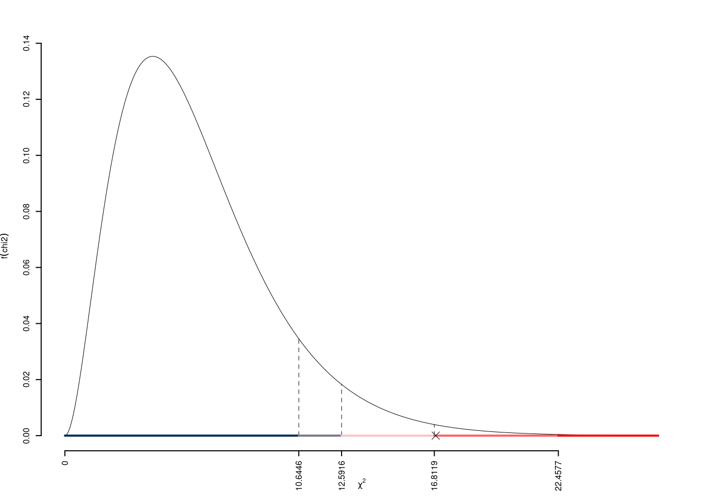
Il \(p_{\text{value}}\) è
\[ p_{\text{value}} = P(\chi^2_{6}>16.87)=0.00977307696947294 \]
Attenzione il calcolo del \(p_\text{value}\) con la distribuzione \(\chi^2\) è puramente illustrativo e non può essere riprodotto senza una calcolatrice statistica adeguata.\[ 0.001 \leq p_\text{value}= 0.009773 < 0.01 \]
Esercizio 6
In uno studio sulla qualità della vita si è osservato su 4 provincie l’ammontare degli investimenti provinciali pro capite per attività culturali (\(X\)), in centinaia di euro, e un indice di qualità della vita (\(Y\)), espresso in opportuna scala. Qui di seguito i dati| \(i\) | \(x_i\) | \(y_i\) |
|---|---|---|
| 1 | 1 | 4 |
| 2 | 2 | 6 |
| 3 | 4 | 5 |
| 4 | 5 | 8 |
6.a (Punti 14/100 \(\rightarrow\) 4.34/31) Stimare il modello di regressione dove la qualità della vita è spiegata dagli investimenti provinciali.
| \(i\) | \(x_i\) | \(y_i\) | \(x_i^2\) | \(y_i^2\) | \(x_i\cdot y_i\) |
|---|---|---|---|---|---|
| 1 | 1 | 4.00 | 1.00 | 18.0 | 4 |
| 2 | 2 | 6.00 | 4.00 | 31.0 | 12 |
| 3 | 4 | 5.00 | 15.00 | 29.0 | 21 |
| 4 | 5 | 8.00 | 27.00 | 56.0 | 39 |
| Totale | 12 | 23.00 | 47.00 | 134.0 | 76 |
| Totale/n | 3 | 5.75 | 11.75 | 33.5 | 19 |
\[\begin{eqnarray*} \bar x &=&\frac 1 n\sum_{i=1}^n x_i = \frac {1}{ 4 } 12 = 3 \\ \bar y &=&\frac 1 n\sum_{i=1}^n y_i = \frac {1}{ 4 } 23 = 5.75 \\ \hat\sigma_X^2&=&\frac 1 n\sum_{i=1}^n x_i^2-\bar x^2=\frac {1}{ 4 } 48 - 3 ^2= 3 \\ \hat\sigma_Y^2&=&\frac 1 n\sum_{i=1}^n y_i^2-\bar y^2=\frac {1}{ 4 } 134 - 5.75 ^2= 0.4375 \\ \text{cov}(X,Y)&=&\frac 1 n\sum_{i=1}^n x_i~y_i-\bar x\bar y=\frac {1}{ 4 } 76 - 3 \cdot 5.75 = 1.755 \\ \hat\beta_1 &=& \frac{\text{cov}(X,Y)}{\hat\sigma_X^2} \\ &=& \frac{ 1.755 }{ 3 } = 0.585 \\ \hat\beta_0 &=& \bar y - \hat\beta_1 \bar x\\ &=& 5.75 - 0.585 \times 3 = 3.995 \end{eqnarray*}\]
6.b (Punti 3/100 \(\rightarrow\) 0.93/31) Calcolare la percentuale di varianza spiegata dal modello.
Ricaviamo \(R^2\) \[ R^2=\left(\frac{1.755}{1.6163\cdot 1.1819}\right)^2=1.5319^2=2.3467 \] Il modello si adatta molto bene ai dati, spiegando il 234.6686% (>75%) della variabilità totale della Y.
6.c (Punti 3/100 \(\rightarrow\) 0.93/31) Ricavare le quantità \(TSS\), \(RSS\) e \(ESS\).
\[\begin{eqnarray*} TSS &=& n\hat\sigma^2_Y\\ &=& 4 \times 0.4375 \\ &=& 1.75 \\ ESS &=& R^2\cdot TSS\\ &=& 2.347 \cdot 1.75 \\ &=& 4.107 \\ RSS &=& (1-R^2)\cdot TSS\\ &=& (1- 2.347 )\cdot 1.75 \\ &=& -2.357 \\ TSS &=& ESS+RSS \\ 1.75 &=& 4.107 + -2.357 \end{eqnarray*}\]
6.d (Punti 2/100 \(\rightarrow\) 0.62/31) Cosa significa che gli stimatori di massima dei minimi quadrati \(\hat\beta_0\) e \(\hat\beta_1\) sono BLUE?
Gli stimatori \(\hat\beta_{0}\) e \(\hat\beta_{1}\) di \(\beta_{0}\) e \(\beta_{1}\) sono, tra tutti gli stimatori lineari corretti per \(\beta_0\) e \(\beta_1\), BLUE ( Best Linear Unbiased Estimators Best: i più efficienti; Unbiased: corretti; Linear Estimators: stimatori lineari).
Prova di Statistica 2021/07/22-1
Esercizio 1
Su un campione di \(350\) aziende è stato rilevato il costo annuo in gas metano (espresso in migliaia di euro). Qui di seguito l’istogramma di densità:
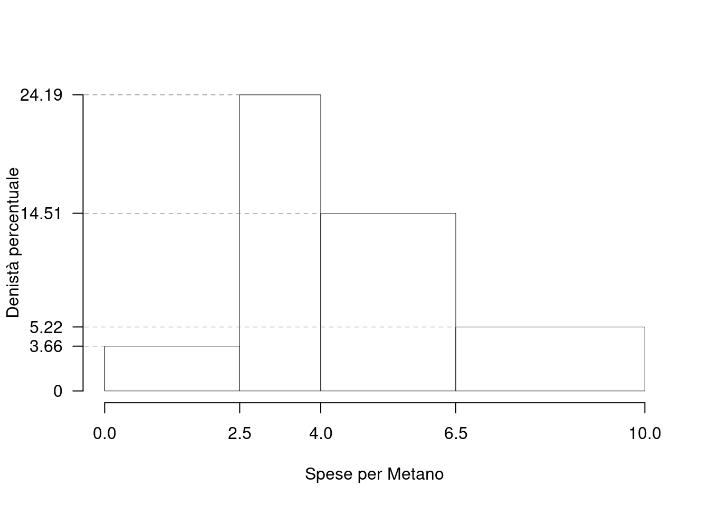| \([\text{x}_j,\) | \(\text{x}_{j+1})\) | \(h_j\) |
|---|---|---|
| 0.0 | 2.5 | 3.657 |
| 2.5 | 4.0 | 24.191 |
| 4.0 | 6.5 | 14.514 |
| 6.5 | 10.0 | 5.224 |
1.a (Punti 14/100 \(\rightarrow\) 4.34/31) Calcolare il valore approssimato della mediana.
| \([\text{x}_j,\) | \(\text{x}_{j+1})\) | \(h_j\) | \(b_j\) | \(f_j\) | \(F_j\) |
|---|---|---|---|---|---|
| 0.0 | 2.5 | 3.657 | 2.5 | 0.0914 | 0.0914 |
| 2.5 | 4.0 | 24.191 | 1.5 | 0.3629 | 0.4543 |
| 4.0 | 6.5 | 14.514 | 2.5 | 0.3629 | 0.8171 |
| 6.5 | 10.0 | 5.224 | 3.5 | 0.1829 | 1.0000 |
| 10.0 | 1.0000 |
e quindi: \[\begin{eqnarray*} p &=& 0.5 , \text{essendo }F_{ 3 }= 0.8171 > 0.5 \Rightarrow j_{ 0.5 }= 3 \\ x_{ 0.5 } &=& x_{\text{inf}; 3 } + \frac{ { 0.5 } - F_{ 2 }} {f_{ 3 }} \cdot b_{ 3 } \\ &=& 4 + \frac {{ 0.5 } - 0.4543 } { 0.3629 } \cdot 2.5 \\ &=& 4.315 \end{eqnarray*}\]
1.b (Punti 3/100 \(\rightarrow\) 0.93/31) Che relazione dobbiamo aspettarci tra media e mediana?
L’istogramma presenta una coda lunga a sinistra e quindi \[ \bar x > x_{0.5} \]
1.c (Punti 2/100 \(\rightarrow\) 0.62/31) La varianza dei dati è pari a \(\sigma^2=4.8382\). Nell’ipotesi che i costi per metano aumentassero del 10%, quanto varrebbe la varianza?
Si tratta di una trasformazione lineare \[ Y = 1.1\cdot X \] e quindi \[ \sigma_Y^2=(1.1)^2\sigma_X^2=5.8542. \]
Esercizio 2
In una stazione ci sono 3 binari. Ogni ora il numero di persone che transita su ogni binario è descritto da una Poisson. In particolare
- \(X_1\sim\text{Pois}(1.1)\), il binario uno;
- \(X_2\sim\text{Pois}(1.1)\), il binario due;
- \(X_3\sim\text{Pois}(0.5)\), il binario tre.
Il numero di persone in transito su un binario è indipendente dal numero di persone in transito sugli altri binari.
2.a (Punti 14/100 \(\rightarrow\) 4.34/31) Calcolare la probabilità che il totale delle persone in transito nella stazione, in una data ora, sia maggiore o uguale a due.
Il totale di persone in transito è la somma delle tre Poisson \[ X=X_1+X_2+X_3\sim \text{Pois}(\lambda=1.1+1.1+0.3) \] \[\begin{eqnarray*} P( X \geq 2 ) &=& 1-P( X < 2 ) \\ &=& 1-\left( \frac{ 2.5 ^{ 0 }}{ 0 !}e^{- 2.5 }+\frac{ 2.5 ^{ 1 }}{ 1 !}e^{- 2.5 } \right)\\ &=& 1-( 0.0821+0.2052 )\\ &=& 1- 0.2873 \\ &=& 0.7127 \end{eqnarray*}\]
2.b (Punti 3/100 \(\rightarrow\) 0.93/31) Calcolare la probabilità di osservare una persona su un binario, una persona su un altro binario e nessuna persona sul rimanetene.
Anzitutto osserviamo:
\[\begin{eqnarray*} P(X_1= 0) &=& P(X_2=0)\\ &=& \frac{1.1^0}{0!}e^{-1.1}\\ &=& 0.3329\\ P(X_1= 1) &=& P(X_2=1)\\ &=& \frac{1.1^1}{1!}e^{-1.1}\\ &=& 0.3662\\ P(X_3= 0) &=& \frac{0.5^0}{0!}e^{-0.5}\\ &=& 0.6065\\ P(X_3= 1) &=& \frac{0.5^1}{1!}e^{-0.5}\\ &=& 0.3033\\ \end{eqnarray*}\]
L’evento una persona su un binario, una persona su un altro binario e nessuna persona sul rimanetene si scompone:
\[\begin{eqnarray*} E &=& \big\{(X_1=1\cap X_2=1\cap X_3=0)\cup\\ &&\cup(X_1=1\cap X_2=0\cap X_3=1)\cup\\ &&\cup(X_1=0\cap X_2=1\cap X_3=1)\big\}\\ P(E) &=& \phantom{+} P(X_1=1\cap X_2=1\cap X_3=0)+\\ && + P(X_1=1\cap X_2=0\cap X_3=1)+\\ && + P(X_1=0\cap X_2=1\cap X_3=1)\\ &=& \phantom{+} P(X_1=1)P(X_2=1)P(X_3=0)+\\ && + P(X_1=1)P(X_2=0)P(X_3=1)+\\ && + P(X_1=0)P(X_2=1)P(X_3=1)\\ &=& \phantom{+} 0.3662\cdot0.3662\cdot0.6065+\\ && +0.3662\cdot0.3329\cdot0.3033+\\ && +0.3329\cdot0.3662\cdot0.3033\\ &=& 0.1552 \end{eqnarray*}\]
2.c (Punti 3/100 \(\rightarrow\) 0.93/31) Siano \(X_1,...,X_n\), \(n\) VC IID, tali che \[ X_i\sim N(0,1). \] Posto \[ \bar X = \frac{X_1+...+X_n}{n}, \] come si distribuisce \(\bar X\)?
\[ \bar X = \frac{X_1+...+X_n}{n}\sim N\left(0,\frac 1n\right), \]
2.d (Punti 2/100 \(\rightarrow\) 0.62/31) Siano \(X_1\sim \text{Binom}(5,0.3)\) e \(X_2\sim \text{Binom}(3,0.3)\). Come si distribuisce, \[X_1+X_2\sim ~~?\]
\[X_1+X_2\sim \text{Binom}(8,0.3)\]
se e solo se \(X_1\) e \(X_2\) sono indipendenti.
Esercizio 3
3.a (Punti 14/100 \(\rightarrow\) 4.34/31) Un’urna contiene 4 palline numerate \[\fbox{-1},\fbox{0},\fbox{2},\fbox{3}\] Si estrae \(n=64\) volte con reintroduzione.
Calcolare la probabilità che la media delle 64 estrazioni sia compresa tra 0.92 e 4.08.
\[\begin{eqnarray*} \mu &=& E(X_i) = \sum_{x\in S_X}x P(X=x)\\ &=& ( -1 ) \frac { 1 }{ 4 }+ 0 \frac { 1 }{ 4 }+ 2 \frac { 1 }{ 4 }+ 3 \frac { 1 }{ 4 } \\ &=& 1 \\ \sigma^2 &=& V(X_i) = \sum_{x\in S_X}x^2 P(X=x)-\mu^2\\ &=&\left( ( -1 ) ^2\frac { 1 }{ 4 }+ 0 ^2\frac { 1 }{ 4 }+ 2 ^2\frac { 1 }{ 4 }+ 3 ^2\frac { 1 }{ 4 } \right)-( 1 )^2\\ &=& 2.5 \end{eqnarray*}\]
In virtù del TLC per la media otteniamo
Teorema del Limite Centrale (media VC qualunque)
Siano \(X_1\),…,\(X_n\), \(n=64\) VC IID, tc \(E(X_i)=\mu=1\) e \(V(X_i)=\sigma^2=2.5,\forall i\), posto: \[ \bar X=\frac{S_n}n =\frac{X_1 + ... + X_n}n \] allora:\[\begin{eqnarray*} \bar X & \mathop{\sim}\limits_{a}& N(\mu,\sigma^2/n) \\ &\sim & N\left(1,\frac{2.5}{64}\right) \\ &\sim & N(1,0.03906) \end{eqnarray*}\]\[\begin{eqnarray*} P( 0.92 < \bar X \leq 4.08 ) &=& P\left( \frac { 0.92 - 1 }{\sqrt{ 0.03906 }} < \frac { \bar X - \mu }{ \sqrt{\sigma^2/n} } \leq \frac { 4.08 - 1 }{\sqrt{ 0.03906 }}\right) \\ &=& P\left( -0.4 < Z \leq 15.58 \right) \\ &=& \Phi( 15.58 )-\Phi( -0.4 )\\ &=& \Phi( 15.58 )-(1-\Phi( 0.4 )) \\ &=& 1 -(1- 0.6554 ) \\ &=& 0.6554 \end{eqnarray*}\]
Esercizio 4
4.a (Punti 3/100 \(\rightarrow\) 0.93/31) Se \(h\) è uno stimatore tale che la sua distorsione va a zero per \(n\) che tende all’infinito: \[ \lim_{n\to \infty}B(h)=0 \] di quale proprietà gode \(h\)?
Osserviamo che \[\begin{align*} B(h) &= E(h)-\theta&\text{e quindi}\\ \lim_{n\to\infty}B(h)&=0\\ \lim_{n\to\infty}(E(h)-\theta)&=0 &\text{se e solo se}\\ \lim_{n\to\infty}E(h)&=\theta &\text{cioè $h$ è asintoticamente corretto} \end{align*}\]
4.b (Punti 3/100 \(\rightarrow\) 0.93/31) Definire la funzione di verosimiglianza della Bernoulli.
La verosimiglianza è \[\begin{eqnarray*} L(\pi) &\propto& \prod_{i=1}^n \pi^{x_i}(1-\pi)^{1-x_i}\\ &=& \pi^{s_n}(1-\pi)^{n-s_n}, \qquad s_n=\sum_{i=1}^n x_i \end{eqnarray*}\]
4.c (Punti 3/100 \(\rightarrow\) 0.93/31) Un dado, che non sappiamo se è perfetto oppure no, viene lanciato 40 volte. Posto \(\pi_i\) la probabilità che il dado mostri la faccia \(i\), \(i=1,...,6\), si è testato \[ \begin{cases} H_0:\pi_1=\pi_2=...=\pi_6=\frac 16 \end{cases} \] ed è risultato \(p_\text{value}=0.21\). Possiamo concludere che il dado sia truccato?
Il \(p_\text{value}=0.21>0.05\) non c’è motivo per rifiutare \(H_0\), quindi il dado non è truccato.
Esercizio 5
Una casa farmaceutica sta sperimentando un farmaco che lenisce il mal di testa in modo rapido. Osservati \(n=15\) individui, si è registrato che il farmaco agisce in media \(\bar x=26.2\) minuti, con una sd corretta pari a \(S=0.9\).
5.a (Punti 3/100 \(\rightarrow\) 0.93/31) Costruire un intervallo di confidenza al 99% per il tempo medio di azione.
\(1-\alpha =0.99\) e quindi \(\alpha=0.01\rightarrow \alpha/2=0.005\)
\[ S =\sqrt{\frac {n}{n-1}}\cdot\hat\sigma = \sqrt{\frac { 15 }{ 14 }}\cdot 0.9 = 0.9316 \] \[\begin{eqnarray*} Idc: & & \hat\mu \pm t_{n-1;\alpha/2} \times \frac{S}{\sqrt{n}} \\ & & 26.2 \pm 2.977 \times \frac{ 0.9316 }{\sqrt{ 15 }} \\ & & 26.2 \pm 2.977 \times 0.2405 \\ & & [ 25.48 , 26.92 ] \end{eqnarray*}\]
5.b (Punti 11/100 \(\rightarrow\) 3.41/31) È ben noto, da studi pregressi, che quella tipologia di farmaci ha un tempo medio di azione pari a 29.3. Testare che il farmaco in sperimentazione agisca in modo uguale agli altri contro l’alternativa che abbia tempi di azione inferiori.
Test \(t\) per una media, varianza incognita
\(\fbox{A}\) FORMULAZIONE DELLE IPOTESI
\[\begin{cases} H_0: \mu = \mu_0=29.3 \\ H_1: \mu < \mu_0=29.3 \end{cases}\]
\[\begin{eqnarray*} S &=& \sqrt{\frac{n} {n-1}}\ \widehat{\sigma} = \sqrt{\frac{ 15 } { 15 -1}} \times 0.9 = 0.9316 \end{eqnarray*}\] \[\begin{eqnarray*} \frac{\hat\mu - \mu_{0}} {S/\,\sqrt{n}}&\sim&t_{n-1}\\ t_{\text{obs}} &=& \frac{ ( 26.2 - 29.3 )} { 0.9316 /\sqrt{ 15 }} = -12.89 \, . \end{eqnarray*}\]
\(\fbox{C}\) CONCLUSIONE
Consideriamo \(\alpha=0.1, 0.05, 0.01, 0.001\)
I valori critici sono
\(t_{15-1;0.1}=-1.345\); \(t_{15-1;0.05}=-1.7613\); \(t_{15-1;0.01}=-2.6245\); \(t_{15-1;0.001}=-3.7874\)
Siccome \(t_\text{obs}=-12.8879<-1.345\), quindi rifiuto \(H_0\) sotto all’1‰,
\(p_\text{value}<0.001\), estremamente significativo \(\fbox{***}\).
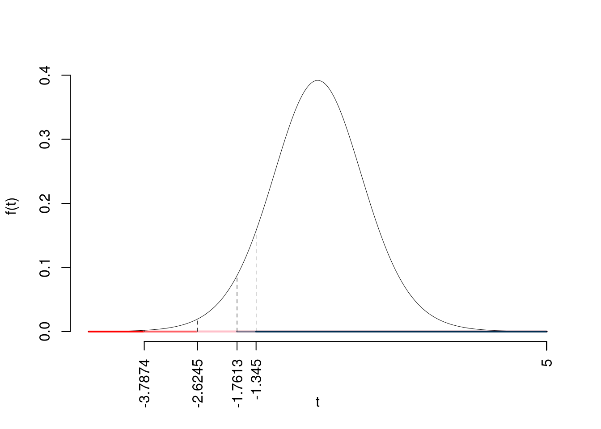
Il \(p_{\text{value}}\) è
\[ p_{\text{value}} = P(T_{15-1}<-12.89)=2e-09 \]
Attenzione il calcolo del \(p_\text{value}\) con la \(T\) è puramente illustrativo e non può essere riprodotto senza una calcolatrice statistica adeguata.\[ 0 < p_\text{value}= 2e-09 \leq 0.001 \]
Esercizio 6
In uno studio sul risparmio gestito sono stati intervistati \(n=15\) individui sui quali è stato rilevato il reddito mensile \(X\) (in migliaia di euro), e il risparmio gestito \(Y\) (in migliaia di euro). Il modello di regressione. Qui di seguito i dati e le statistiche di interesse:
| \(i\) | \(x_i\) | \(y_i\) | \(x_i^2\) | \(y_i^2\) | \(x_i\cdot y_i\) |
|---|---|---|---|---|---|
| 1 | 0.470 | 0.0400 | 0.22 | 0.0000 | 0.020 |
| 2 | 1.980 | 0.1600 | 3.92 | 0.0300 | 0.320 |
| 3 | 2.270 | 0.0400 | 5.15 | 0.0000 | 0.090 |
| 4 | 2.380 | 0.0600 | 5.66 | 0.0000 | 0.140 |
| 5 | 2.830 | 0.0600 | 8.01 | 0.0000 | 0.170 |
| 6 | 3.240 | 0.1200 | 10.50 | 0.0100 | 0.390 |
| 7 | 3.960 | 0.1600 | 15.68 | 0.0300 | 0.630 |
| 8 | 4.390 | 0.1400 | 19.27 | 0.0200 | 0.610 |
| 9 | 4.450 | 0.2800 | 19.80 | 0.0800 | 1.250 |
| 10 | 5.750 | 0.2500 | 33.06 | 0.0600 | 1.440 |
| 11 | 7.180 | 0.4000 | 51.55 | 0.1600 | 2.870 |
| 12 | 7.490 | 0.4100 | 56.10 | 0.1700 | 3.070 |
| 13 | 8.480 | 0.5600 | 71.91 | 0.3100 | 4.750 |
| 14 | 8.850 | 0.5600 | 78.32 | 0.3100 | 4.960 |
| 15 | 9.990 | 0.7600 | 99.80 | 0.5800 | 7.590 |
| Totale | 73.710 | 4.0000 | 478.95 | 1.7600 | 28.300 |
| Totale/n | 4.914 | 0.2667 | 31.93 | 0.1173 | 1.887 |
6.a (Punti 14/100 \(\rightarrow\) 4.34/31) Stimare il modello di regressione dove il risparmio è funzione del reddito e quello in cui il reddito è funzione del risparmio.
\[\begin{eqnarray*} \bar x &=&\frac 1 n\sum_{i=1}^n x_i = \frac {1}{ 15 } 73.71 = 4.914 \\ \bar y &=&\frac 1 n\sum_{i=1}^n y_i = \frac {1}{ 15 } 4 = 0.2667 \\ \hat\sigma_X^2&=&\frac 1 n\sum_{i=1}^n x_i^2-\bar x^2=\frac {1}{ 15 } 479 - 4.914 ^2= 7.784 \\ \hat\sigma_Y^2&=&\frac 1 n\sum_{i=1}^n y_i^2-\bar y^2=\frac {1}{ 15 } 1.77 - 0.2667 ^2= 0.04689 \\ \text{cov}(X,Y)&=&\frac 1 n\sum_{i=1}^n x_i~y_i-\bar x\bar y=\frac {1}{ 15 } 28.3 - 4.914 \cdot 0.2667 = 0.5762 \\ \hat\beta_1 &=& \frac{\text{cov}(X,Y)}{\hat\sigma_X^2} \\ &=& \frac{ 0.5762 }{ 7.784 } = 0.07403 \\ \hat\beta_0 &=& \bar y - \hat\beta_1 \bar x\\ &=& 0.2667 - 0.074 \times 4.914 = -0.09711 \end{eqnarray*}\]\[\begin{eqnarray*} \bar y &=&\frac 1 n\sum_{i=1}^n y_i = \frac {1}{ 15 } 4 = 0.2667 \\ \bar x &=&\frac 1 n\sum_{i=1}^n x_i = \frac {1}{ 15 } 73.71 = 4.914 \\ \hat\sigma_y^2&=&\frac 1 n\sum_{i=1}^n y_i^2-\bar y^2=\frac {1}{ 15 } 1.77 - 0.2667 ^2= 0.04689 \\ \hat\sigma_x^2&=&\frac 1 n\sum_{i=1}^n x_i^2-\bar x^2=\frac {1}{ 15 } 479 - 4.914 ^2= 7.784 \\ \text{cov}(y,x)&=&\frac 1 n\sum_{i=1}^n y_i~x_i-\bar y\bar x=\frac {1}{ 15 } 28.3 - 0.2667 \cdot 4.914 = 0.5762 \\ \hat\alpha_1 &=& \frac{\text{cov}(y,x)}{\hat\sigma_y^2} \\ &=& \frac{ 0.5762 }{ 0.04689 } = 0.07403 \\ \hat\alpha_0 &=& \bar x - \hat\alpha_1 \bar y\\ &=& 4.914 - 0.074 \times 0.2667 = -0.09711 \end{eqnarray*}\]
6.b (Punti 3/100 \(\rightarrow\) 0.93/31) I due modelli si adattano bene ai dati?
\[ r^2=(0.9538)^2=0.9098>0.75 \]
Sì, i modelli si adattano bene
6.c (Punti 3/100 \(\rightarrow\) 0.93/31) Discutere il diagramma dei residui del modello di regressione dove \(Y\) viene spiegata da \(X\). 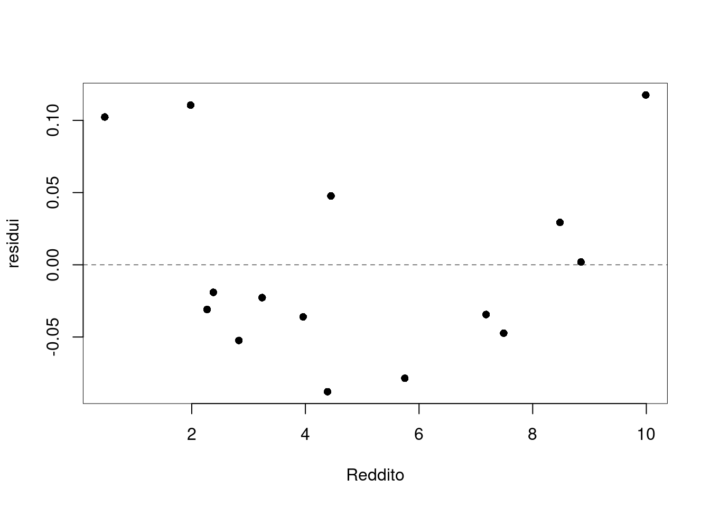
C’è una non linearità evidente, l’assunto zero non è rispettato
6.d (Punti 2/100 \(\rightarrow\) 0.62/31) Se ogni individuo risparmiasse 10€ in più al mese, quanto varrebbe \(r\)?
Se ogni individuo risparmiasse 10€ in più al mese allora \[ W=Y+10 \] e in virtù dell’invarianza del coefficiente di correlazione alle trasformazioni lineari otterremmo: \[ r_{XW}=r_{XY}=0.9538 \]
Prova di Statistica 2021/07/22-2
Esercizio 1
Su un campione di \(350\) aziende è stato rilevato il costo annuo in gas metano (espresso in migliaia di euro). Qui di seguito i dati e le frequenze percentuali
| \([\text{x}_j,\) | \(\text{x}_{j+1})\) | \(f_{j\%}\) |
|---|---|---|
| 0.0 | 2.5 | 9.143 |
| 2.5 | 4.0 | 36.286 |
| 4.0 | 6.5 | 36.286 |
| 6.5 | 10.0 | 18.286 |
1.a (Punti 14/100 \(\rightarrow\) 4.34/31) Calcolare la colonna delle densità percentuali.
| \([\text{x}_j,\) | \(\text{x}_{j+1})\) | \(n_j\) | \(f_j\) | \(b_j\) | \(h_j\) |
|---|---|---|---|---|---|
| 0.0 | 2.5 | 32 | 0.0914 | 2.5 | 3.657 |
| 2.5 | 4.0 | 127 | 0.3629 | 1.5 | 24.191 |
| 4.0 | 6.5 | 127 | 0.3629 | 2.5 | 14.514 |
| 6.5 | 10.0 | 64 | 0.1829 | 3.5 | 5.224 |
1.b (Punti 3/100 \(\rightarrow\) 0.93/31) Calcolare il numero approssimato di aziende con consumo di gas inferiore al 25-esimo percentile \(x_{0.25}\).
Per definizione \[ \%(X\le x_{0.25})=25\% \] \(n=350\) e quindi il 25% di 350 è \[ 350\times0.25=87.5 \]
1.c (Punti 2/100 \(\rightarrow\) 0.62/31) È vero che la media aritmetica minimizza la somma dei valori assoluti degli scarti? Perché?
È la mediana che minimizza la somma dei valori assoluti degli scarti. Siccome media e mediana, in generale non coincidono allora no, la media non minimizza la somma dei valori assoluti degli scarti.
Esercizio 2
Ci sono due urne:
- l’urna \(A\): \(\left\{\fbox{0},\fbox{0},\fbox{1}\right\}\) e
- l’urna \(B\): \(\left\{\fbox{0},\fbox{1},\fbox{1}\right\}\).
Si estrae dalle due urne e si somma,
- se la somma fa 2 si vince,
- altrimenti si perde,
poi si rimettono le palline nelle urne e si ripete il gioco per \(n=5\) volte.
2.a (Punti 14/100 \(\rightarrow\) 4.34/31) Qual è la probabilità di vincere almeno 1 volta su 5 giocate?
\[ \pi=P(X_A+X_B=2)=P(X_A=1)P(X_B=1)=\frac 13\times\frac23=\frac29=0.2222 \]
\(X\sim\text{Binom}(n=5,\pi=0.2222)\) e quindi
\[\begin{eqnarray*} P( X \geq 1 ) &=& 1-P( X < 1 ) \\ &=& 1-\left( \binom{ 5 }{ 0 } 0.2222 ^{ 0 }(1- 0.2222 )^{ 5 - 0 } \right)\\ &=& 1-( 0.2847 )\\ &=& 1- 0.2847 \\ &=& 0.7153 \end{eqnarray*}\]
2.b (Punti 3/100 \(\rightarrow\) 0.93/31) Per giocare si devono puntare due euro ad ogni giocata. Se vinciamo ci vengono dati 9€, i 2€ giocati più 7€ di vincita. Quindi:
- se la somma non fa 2 perdiamo 2€
- se la somma fa 2 riceviamo 9€ (7€ vinti + 2€ giocati)
Quale è il valore atteso della variabile causale che conta il totale di euro ottenuti dopo 5 partite?
Sia \(X_i\) la VC che dice se alla giocata \(i\) si è vinto o perso \[ X_i\sim\text{Ber}\left(\pi=\frac 29\right) \] sia \(Y\) il guadagno/perdita della giocata \(i\) \[ Y_i=-2+9X_i \] e quindi \[ E(Y_i)=E(-2+9X)=-2+9E(X)=-2+9~\frac29=0 \] Sia \(Y\) la vincita totale dopo 5 partite
\[\begin{eqnarray*} Y &=&Y_1+...+Y_5\\ E(Y) &=&E(Y_1+...+Y_5)\\ &=&E(Y_1)+...+E(Y_n)\\ &=& 0+...+0\\ &=& 0 \end{eqnarray*}\]
2.c (Punti 3/100 \(\rightarrow\) 0.93/31) Se \(A\) e \(B\) sono due eventi tali che, \(P(A)=0.5\), \(P(B)=0.4\) e \(P(A\cup B)=0.58\). \(A\) e \(B\) sono indipendenti? Perché?
No, perché se lo fossero \[ P(A\cap B)=0.5\times 0.4=0.2 \] e quindi \[\begin{eqnarray*} P(A\cup B) &=& P(A)+P(B)-P(A\cap B)\\ &=& 0.5+0.4-0.2\\ &=& 0.7\ne 0.58 \end{eqnarray*}\]
2.d (Punti 2/100 \(\rightarrow\) 0.62/31) Siano \(Y_1,...,Y_n\), \(n\) VA IID, tali che, \(Y_i\sim\chi_{1}^2\), posto \[ X=\sum_{i=1}^n Y_i \] come si distribuisce \(X\)?
Esercizio 3
3.a (Punti 14/100 \(\rightarrow\) 4.34/31) Un’urna contiene 150 di palline numerate.
- 40 palline numerate con -1
- 70 palline numerate con 0
- 40 palline numerate con +1
Si estrae \(n=81\) volte con reintroduzione, qual è la probabilità che la somma delle 81 estrazioni sia compresa tra \(-6.6\) e \(+6.6\)?
\[\begin{eqnarray*} \mu &=& E(X_i) = \sum_{x\in S_X}x P(X=x)\\ &=& ( -1 ) \frac { 40 }{ 150 }+ 0 \frac { 70 }{ 150 }+ 1 \frac { 40 }{ 150 } \\ &=& 0 \\ \sigma^2 &=& V(X_i) = \sum_{x\in S_X}x^2 P(X=x)-\mu^2\\ &=&\left( ( -1 ) ^2\frac { 40 }{ 150 }+ 0 ^2\frac { 70 }{ 150 }+ 1 ^2\frac { 40 }{ 150 } \right)-( 0 )^2\\ &=& 0.5333 \end{eqnarray*}\] Teorema del Limite Centrale (somma VC qualunque)
Siano \(X_1\),…,\(X_n\), \(n=81\) VC IID, tc \(E(X_i)=\mu=0\) e \(V(X_i)=\sigma^2=0.5333,\forall i\), posto: \[ S_n = X_1 + ... + X_n \] allora:\[\begin{eqnarray*} S_n & \mathop{\sim}\limits_{a}& N(n\mu,n\sigma^2) \\ &\sim & N(81\cdot0,81\cdot0.5333) \\ &\sim & N(0,43.2) \end{eqnarray*}\]\[\begin{eqnarray*} P( -6.6 < S_n \leq 6.6 ) &=& P\left( \frac { -6.6 - 0 }{\sqrt{ 43.2 }} < \frac { S_n - n\mu }{ \sqrt{n\sigma^2} } \leq \frac { 6.6 - 0 }{\sqrt{ 43.2 }}\right) \\ &=& P\left( -1 < Z \leq 1 \right) \\ &=& \Phi( 1 )-\Phi( -1 )\\ &=& \Phi( 1 )-(1-\Phi( 1 )) \\ &=& 0.8413 -(1- 0.8413 ) \\ &=& 0.6826 \end{eqnarray*}\]
Esercizio 4
4.a (Punti 3/100 \(\rightarrow\) 0.93/31) Sia \(\hat\sigma^2\) lo stimatore di massima verosimiglianza per il parametro \(\sigma^2\) della normale. \(\hat\sigma^2\) è corretto? Quanto vale la sua distorsione?
No, \(\hat\sigma^2\) non è corretto \[ E(\hat\sigma^2)=\frac{n-1}n\sigma^2 \] e quindi \[ B(\hat\sigma^2)=|E(\hat\sigma^2)-\sigma^2|=\frac {\sigma^2}n \]
4.b (Punti 3/100 \(\rightarrow\) 0.93/31) Descrivere la tavola della verità di un test.
4.c (Punti 3/100 \(\rightarrow\) 0.93/31) In uno studio clinico si è osservato l’effeto sul numero di anticorpi su due gruppi trattati con un farmaco differente. Si è osservato \(\hat\mu_1=10.2\), \(\hat\sigma_1=1.12\) e \(\hat\mu_2=15.6\), \(\hat\sigma_2=3.72\). Posto a test \[ \begin{cases} H_0:\sigma_1=\sigma_2\\ H_1:\sigma_1\ne \sigma_2 \end{cases} \] è risultato \(p_\text{value}=0.21\). Quale test dovremmo usare per testare la differenza tra le medie?
Esercizio 5
Un’azienda automobilistica sta sperimentando un nuovo tipo di motore per ridurre i consumi di carburante. Il motore montato su un’auto prototipo che è stata fatta guidare a \(n=15\) giornalisti. Si è osservato un consumo medio pari \(\bar x=24.5~\text{Km/litro}\) con una deviazione standard \(\hat\sigma=2.25~\text{Km/litro}\).
5.a (Punti 3/100 \(\rightarrow\) 0.93/31) Costruire un intervallo di confidenza al 95% per il consumo medio.
\(1-\alpha =0.95\) e quindi \(\alpha=0.05\rightarrow \alpha/2=0.025\)
\[ S =\sqrt{\frac {n}{n-1}}\cdot\hat\sigma = \sqrt{\frac { 15 }{ 14 }}\cdot 2.25 = 2.329 \] \[\begin{eqnarray*} Idc: & & \hat\mu \pm t_{n-1;\alpha/2} \times \frac{S}{\sqrt{n}} \\ & & 24.5 \pm 2.145 \times \frac{ 2.329 }{\sqrt{ 15 }} \\ & & 24.5 \pm 2.145 \times 0.6013 \\ & & [ 23.21 , 25.79 ] \end{eqnarray*}\]
5.b (Punti 11/100 \(\rightarrow\) 3.41/31) È noto che quella fascia di motori ha un consuo medio pari \(23.9~\text{Km/litro}\). Testare che il nuovo motore consumi come gli altri contro l’alternativa che abbia consumi diversi.
\[ \begin{cases} H_0:\mu=23.9\\ H_1:\mu\ne23.9 \end{cases} \]
Siccome \(23.9\notin IdC_{95\%}\) allora rifiuto \(H_0\) al lds del \(5\%\).
Esercizio 6
In uno studio sugli effetti dell’attività sportiva sul benessere delle persone su \(n=25\) atleti si è misurato:
- il numero medio di ore giornaliere passate a correre (\(X\)),
- il numero medio di ore giornaliere passate a fare palestra (\(W\)),
- un indice di stress misurato misurato su opportuna scala (\(Y\)).
qui di seguito le statistiche di interesse
\[\begin{align*} \bar x&=1.1 &\hat \sigma_X&=0.23, \\ \bar w&=0.9 &\hat \sigma_W&=0.12,\\ \bar y&=12.1 &\hat \sigma_Y&=1.17,\\ \text{cov}(X,W)&=-0.021 &\text{cov}(X,Y)&=0.218 \\ &&\text{cov}(W,Y)&=-0.0197 \end{align*}\]
6.a (Punti 14/100 \(\rightarrow\) 4.34/31) Stimare il modello di regressione dove l’indice di stress (\(Y\)) è spiegato da \(X\) e quello dove \(Y\) è spiegato da \(W\).
\[\begin{align*} Y_i &= \beta_0+\beta_1 x_i +\varepsilon_i&Y_i &=\gamma_0+\gamma_1W_i\\ \hat\beta_1&=\frac{0.218}{0.23^2} &\hat\gamma_1&=\frac{-0.0323}{0.12^2}\\ &=4.1204 &&=-2.2425\\ \hat\beta_0&=12.1-4.1204\cdot1.1 &\hat\beta_0&=12.1-(-2.2425\cdot0.9)\\ &=7.5675 &&=14.1182\\ r_{XY}&=\frac{0.218}{0.23\cdot1.17} &r_{WY}&=\frac{-0.0323}{0.12\cdot1.17}\\ &=0.81 &&=-0.23\\ \end{align*}\]
6.b (Punti 3/100 \(\rightarrow\) 0.93/31) Quale dei due modelli è più affidabile?
\[\begin{align*} R_{XY}^2 &= 0.81^2 &R_{WY}^2 &= -0.23^2 \\ &=0.6561 &&=0.0529 \end{align*}\]
quindi \(X\) spiega \(Y\) meglio di \(W\).
6.c (Punti 3/100 \(\rightarrow\) 0.93/31) Considerata la scomposizine della TSS di \(X\) rispetto ad \(Y\). \[ TSS = ESS + RSS \] quanto vale il rapporto \[ \frac{ESS}{TSS}=~? \]
\[ \frac{ESS}{TSS}=~R_{XY}^2=0.6561 \]
6.d (Punti 2/100 \(\rightarrow\) 0.62/31) Sotto ipotesi di normalità dei residui, come sono distribuiti gli stimatori dei mini quadrati \(\hat\beta_0\) e \(\hat\beta_1\)?
\[\begin{eqnarray*} \hat\beta_1&\sim& N\left(\beta_1, \frac{\sigma_{\varepsilon}^{2}} {n \hat{\sigma}^{2}_{X}} \right)\\ \hat\beta_0&\sim& N\left(\beta_0, \sigma_{\varepsilon}^{2} \left( \frac{1} {n} + \frac{\bar{x}^{2}} {n \hat{\sigma}^{2}_{X}} \right) \right) \end{eqnarray*}\]
Prova di Statistica 2021/09/06-1
Esercizio 1
Su un campione di \(155\) aziende è bilancio annuo (espresso in migliaia di euro). Qui di seguito la distribuzione delle frequenze percentuali:| \([\text{x}_j,\) | \(\text{x}_{j+1})\) | \(f_{j\%}\) |
|---|---|---|
| -10 | -5 | 3.871 |
| -5 | 0 | 40.645 |
| 0 | 3 | 36.774 |
| 3 | 20 | 18.710 |
| 100.000 |
1.a (Punti 14/106 \(\rightarrow\) 4.09/31) Individuare la classe modale.
| \([\text{x}_j,\) | \(\text{x}_{j+1})\) | \(f_{j\%}\) | \(n_j\) | \(f_j\) | \(b_j\) | \(h_j\) | \(F_j\) |
|---|---|---|---|---|---|---|---|
| -10 | -5 | 3.871 | 6 | 0.0387 | 5 | 0.7742 | 0.0387 |
| -5 | 0 | 40.645 | 63 | 0.4065 | 5 | 8.1290 | 0.4452 |
| 0 | 3 | 36.774 | 57 | 0.3677 | 3 | 12.2581 | 0.8129 |
| 3 | 20 | 18.710 | 29 | 0.1871 | 17 | 1.1006 | 1.0000 |
| 100.000 | 155 | 1.0000 | 30 |
1.b (Punti 3/106 \(\rightarrow\) 0.88/31) Quante aziende, approssimativamente, hanno un bilancio inferiore a 1.5?
 \[\begin{eqnarray*}
\%(X< 1.5 ) &=& f_{ 1 }\times 100+f_{ 2 }\times 100 +( 1.5 - 0 )\times h_{ 3 } \\
&=& ( 0.0387 )\times 100+( 0.4065 )\times 100 +( 1.5 )\times 12.26 \\
&=& 0.629 \times(100) \\
\#(X< 1.5 ) &\approx& 97
\end{eqnarray*}\]
\[\begin{eqnarray*}
\%(X< 1.5 ) &=& f_{ 1 }\times 100+f_{ 2 }\times 100 +( 1.5 - 0 )\times h_{ 3 } \\
&=& ( 0.0387 )\times 100+( 0.4065 )\times 100 +( 1.5 )\times 12.26 \\
&=& 0.629 \times(100) \\
\#(X< 1.5 ) &\approx& 97
\end{eqnarray*}\]
1.c (Punti 2/106 \(\rightarrow\) 0.58/31) Che relazione dobbiamo aspettarci tra media e mediana?
1.d (Punti 2/106 \(\rightarrow\) 0.58/31) La varianza dei dati è pari a \(\sigma^2=36.8775\). Nell’ipotesi che tutte le aziende aumentassero il loro bilancio di 10 mila ero, quanto varrebbe la varianza dei così trasformati?
Esercizio 2
Siano \(X_1\sim N(10,2)\) e sia \(X_2\sim N(10,3)\). Posto \(A=\{X_1<11\}\), \(B=\{X_1>9\}\), e \(C=\{9<X_2<10\}\)
2.a (Punti 14/106 \(\rightarrow\) 4.09/31) Quanto vale \(P\Big((A\cap B)\cap C\Big)\)?
\[ (A\cap B)\cap C = \{9<X_1<11\}\cap\{9<X_2<10\} \] e quindi \[\begin{eqnarray*} P( 9 < X_1 \leq 11 ) &=& P\left( \frac { 9 - 10 }{\sqrt{ 2 }} < \frac { X_1 - \mu_1 }{ \sigma_1 } \leq \frac { 11 - 10 }{\sqrt{ 2 }}\right) \\ &=& P\left( -0.71 < Z \leq 0.71 \right) \\ &=& \Phi( 0.71 )-\Phi( -0.71 )\\ &=& \Phi( 0.71 )-(1-\Phi( 0.71 )) \\ &=& 0.7611 -(1- 0.7611 ) \\ &=& 0.5222 \end{eqnarray*}\]
inoltre \[\begin{eqnarray*} P( 9 < X_2 \leq 10 ) &=& P\left( \frac { 9 - 10 }{\sqrt{ 3 }} < \frac { X_2 - \mu_2 }{ \sigma_2 } \leq \frac { 10 - 10 }{\sqrt{ 3 }}\right) \\ &=& P\left( -0.58 < Z \leq 0 \right) \\ &=& \Phi( 0 )-\Phi( -0.58 )\\ &=& \Phi( 0 )-(1-\Phi( 0.58 )) \\ &=& 0.5 -(1- 0.719 ) \\ &=& 0.219 \end{eqnarray*}\]
e infine \[ P\Big(\{9<X_1<11\}\cap\{9<X_2<10\}\Big)=P\Big(\{9<X_1<11\}\Big)P\Big(\{9<X_2<10\}\Big)= 0.1135 \]
2.b (Punti 3/106 \(\rightarrow\) 0.88/31) Posto \(Y=X_1-X_2\), calcolare \(P(Y<-1)\).
\[Y=X_1-X_2\sim N(10-10,2+3)\]
\[\begin{eqnarray*} P( Y < -1 ) &=& P\left( \frac { Y - \mu_Y }{ \sigma_Y } < \frac { -1 - 0 }{\sqrt{ 5 }} \right) \\ &=& P\left( Z < -0.45 \right) \\ &=& 1-\Phi( 0.45 ) \\ &=& 0.3264 \end{eqnarray*}\]
2.c (Punti 3/106 \(\rightarrow\) 0.88/31) Siano \(X_1,...,X_n\), \(n\) VC IID, tali che \(X_i\sim \text{Ber}(\pi)\), posto \[ X = X_1+...+X_n \] come si distribuisce \(X\)?
2.d (Punti 2/106 \(\rightarrow\) 0.58/31) Sia \(X\sim \text{Pois}(1.5)\), per quali valori \(x\), \(F(x)\), la funzione di ripartizione di \(X\) è minore o uguale a 0.5? Ovvero, per quali \(x\) la seguente è rispettata \(F(x)\le 0.5\)?
Per definizione \[\begin{eqnarray*} F(x) &=& P(X\le x)\\ &=&\sum_{t=0}^x f(t)\\ &=&\sum_{t=0}^x \frac{\lambda^t}{t!}e^{-\lambda}\\ \end{eqnarray*}\]
\[\begin{eqnarray*} F(0) &=& \frac{1.5^0}{0!}e^{-1.5}=0.2231\\ F(1) &=& \frac{1.5^0}{0!}e^{-1.5}+ \frac{1.5^1}{1!}e^{-1.5}=0.5578 \end{eqnarray*}\]
Esercizio 3
3.a (Punti 2/106 \(\rightarrow\) 0.58/31) Enunciare il teorema centrale del limite per la somma.
3.b (Punti 14/106 \(\rightarrow\) 4.09/31) Il numero di incidenti giornalieri sul lavoro del comparto \(A\) è distribuito come una Poisson di parametro \(\lambda = 0.1\). In un anno \(n=365\) quale è la probabilità che il numero totale di incidenti sia minore di 40?
\(E(X_i)=0.1\), \(V(X_i)=0.1\) e quindi Teorema del Limite Centrale (somma VC qualunque)
Siano \(X_1\),…,\(X_n\), \(n=365\) VC IID, tc \(E(X_i)=\mu=36.5\) e \(V(X_i)=\sigma^2=36.5,\forall i\), posto: \[ S_n = X_1 + ... + X_n \] allora:\[\begin{eqnarray*} S_n & \mathop{\sim}\limits_{a}& N(n\mu,n\sigma^2) \\ &\sim & N(365\cdot36.5,365\cdot36.5) \\ &\sim & N(13322,13322) \end{eqnarray*}\]\[\begin{eqnarray*} P( S_n < 40 ) &=& P\left( \frac { S_n - n\mu }{ \sqrt{n\sigma^2} } < \frac { 40 - 13322 }{\sqrt{ 13322 }} \right) \\ &=& P\left( Z < -115.1 \right) \\ &=& 1-\Phi( 115.08 ) \\ &=& 0 \end{eqnarray*}\]
Esercizio 4
4.a (Punti 3/106 \(\rightarrow\) 0.88/31) Siano \(h_1\) e \(h_2\) due stimatori corretti per \(\theta\), cosa significa che \(h_1\) è più efficiente di \(h_2\)?
4.b (Punti 3/106 \(\rightarrow\) 0.88/31) Definire la funzione di verosimiglianza della Poisson.
4.c (Punti 3/106 \(\rightarrow\) 0.88/31) Una moneta, che non sappiamo se è perfetta oppure no, viene lanciata 40 volte. Posto \(\pi\) la probabilità che la moneta mostri testa, si è testato \[ \begin{cases} H_0:\pi=\frac 12\\ H_1:\pi\ne\frac 12 \end{cases} \] ed è risultato \(p_\text{value}=0.021\). Possiamo concludere che la moneta sia truccata?
4.d (Punti 3/106 \(\rightarrow\) 0.88/31) In caso di campionamento casuale semplice senza reintroduzione quanto vale la varianza della media aritmetica campionaria?
Siano \(X_1,...,X_m\) \(n\) VC estratte senza reintroduzione allora \[\begin{eqnarray*} E(\bar X) &=& \mu\\ V(\bar X) &=& \frac{N-n}{N-1}\frac{\sigma^2}{n} \end{eqnarray*}\]
Esercizio 5
Si sono intervistate 16 piccole imprese modenesi. L’analisi ha mostrato che sentono una forte necessità di investimenti nell’ambito della ricerca industriale; tuttavia, l’importo medio annuale speso per la ricerca industriale è risultato pari a 2750.00€ con una deviazione standard pari a 1300.00€.
5.a (Punti 3/106 \(\rightarrow\) 0.88/31) Determinare un intervallo di confidenza al 95% per l’importo medio annuale speso per la ricerca industriale.
\(1-\alpha =0.95\) e quindi \(\alpha=0.05\rightarrow \alpha/2=0.025\)
\[ S =\sqrt{\frac {n}{n-1}}\cdot\hat\sigma = \sqrt{\frac { 16 }{ 15 }}\cdot 1300 = 1342.6342 \] \[\begin{eqnarray*} Idc: & & \hat\mu \pm t_{n-1;\alpha/2} \times \frac{S}{\sqrt{n}} \\ & & 2750 \pm 2.131 \times \frac{ 1342.6342 }{\sqrt{ 16 }} \\ & & 2750 \pm 2.131 \times 335.7 \\ & & [ 2035 , 3465 ] \end{eqnarray*}\]
5.b (Punti 11/106 \(\rightarrow\) 3.22/31) Una indagine più vasta dell’anno precedente ha fornito una spesa media per la ricerca industriale pari a 3250.00€ con una deviazione standard pari a 1200.00€. Verificare l’ipotesi che l’importo medio nell’ultimo anno sia stato equivalente a quello dell’anno precedente contro l’alternativa di una diminuzione dell’investimento in ricerca industriale.
Test \(Z\) per una media, variazna nota
\(\fbox{A}\) FORMULAZIONE DELLE IPOTESI
\[\begin{cases} H_0: \mu = \mu_0=3250 \\ H_1: \mu < \mu_0=3250 \end{cases}\]
\(\fbox{B}\) SCELTA E CALCOLO STATISTICA-TEST, \(Z\)
\(\sigma^{2}\) di \(\cal{P}\) è nota: \(\Rightarrow\) z-Test.
\[\begin{eqnarray*} \frac{\hat\mu - \mu_{0}} {\sigma/\sqrt{n}}&\sim&N(0,1)\\ z_{\text{obs}} &=& \frac{ ( 2750 - 3250 )} { 1200 /\sqrt{ 16 }} = -1.667 \, . \end{eqnarray*}\]
\(\fbox{C}\) CONCLUSIONE
Consideriamo \(\alpha=0.1, 0.05, 0.01, 0.001\)
I valori critici sono
\(z_{0.1}=-1.2816\); \(z_{0.05}=-1.6449\); \(z_{0.01}=-2.3263\); \(z_{0.001}=-3.0902\)
Siccome \(-2.3263<z_\text{obs}=-1.6667<-1.6449\), quindi rifiuto \(H_0\) al 5%,
\(0.01<p_\text{value}<0.05\), significativo \(\fbox{*}\).
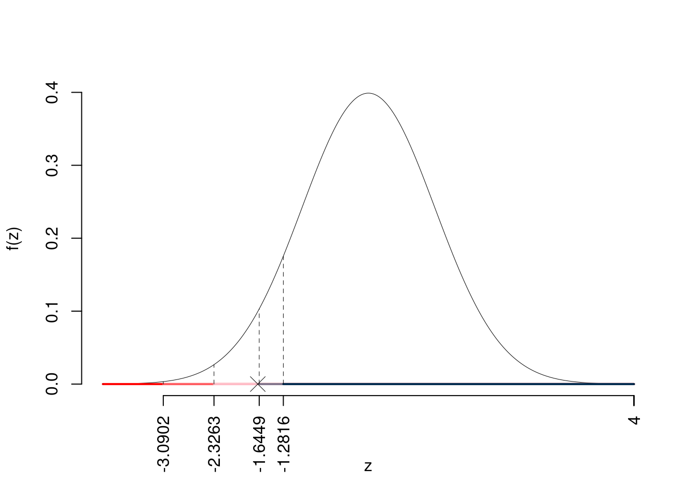
Il \(p_{\text{value}}\) è
\[ p_{\text{value}} = P(Z<-1.67)=0.047790 \]
\[ 0.01 < p_\text{value}= 0.047790 \leq 0.05 \]
Esercizio 6
Si esaminano \(n=15\) aziende e si rileva, per ognuna di esse, il fatturato (\(X\)) e il profitto (\(Y\)) (in unità convenzionali). Si osservano le seguenti statistiche, \(\sum_{i=1}^{15}x_i=73.71\), \(\sum_{i=1}^{15}y_i=4\), \(\sum_{i=1}^{15}x_i^2=478.9693\), \(\sum_{i=1}^{15}y_i^2=1.7694\) e \(\sum_{i=1}^{15}x_iy_i=28.2996\).
6.a (Punti 14/106 \(\rightarrow\) 4.09/31) Stimare il modello di regressione dove \(Y\) viene spiegata da \(X\)
\[\begin{eqnarray*} \bar x &=&\frac 1 n\sum_{i=1}^n x_i = \frac {1}{ 15 } 74 = 4.933 \\ \bar y &=&\frac 1 n\sum_{i=1}^n y_i = \frac {1}{ 15 } 4 = 0.2667 \\ \hat\sigma_X^2&=&\frac 1 n\sum_{i=1}^n x_i^2-\bar x^2=\frac {1}{ 15 } 479 - 4.9333 ^2= 7.596 \\ \hat\sigma_Y^2&=&\frac 1 n\sum_{i=1}^n y_i^2-\bar y^2=\frac {1}{ 15 } 2 - 0.2667 ^2= 0.06222 \\ \text{cov}(X,Y)&=&\frac 1 n\sum_{i=1}^n x_i~y_i-\bar x\bar y=\frac {1}{ 15 } 28 - 4.9333 \cdot 0.2667 = 0.5711 \\ \hat\beta_1 &=& \frac{\text{cov}(X,Y)}{\hat\sigma_X^2} \\ &=& \frac{ 0.5711 }{ 7.596 } = 0.07519 \\ \hat\beta_0 &=& \bar y - \hat\beta_1 \bar x\\ &=& 0.2667 - 0.0752 \times 4.9333 = -0.1043 \end{eqnarray*}\]
6.b (Punti 3/106 \(\rightarrow\) 0.88/31) Qual è la percentuale di varianza spiegata dal modello?
\[\begin{eqnarray*} r&=&\frac{\text{cov}(X,Y)}{\sigma_X\sigma_Y}=\frac{ 0.5711 }{ 2.756 \times 0.2494 }= 0.8307 \\r^2&=& 0.6901 < 0.75 \end{eqnarray*}\] Il modello non si adatta bene ai dati.
6.c (Punti 2/106 \(\rightarrow\) 0.58/31) Se in un modello di regressione si conoscono \(\hat\beta_1\), \(r^2\) e \(\hat\sigma_X\) è possibile ricavare \(\hat\sigma_Y\)? In che modo?
\[\begin{eqnarray*} \hat\beta_1 &=& \frac{\text{cov}(x,y)}{\hat\sigma_X^2}\\ \text{cov}(x,y)&=&\hat\beta_1\hat\sigma_X^2\\ r&=&\frac{\text{cov}(x,y)}{\hat\sigma_X\hat\sigma_Y}\\ \hat\sigma_Y&=&\frac{\text{cov}(x,y)}{r\hat\sigma_X}\\ &=&\frac{\hat\beta_1\hat\sigma_X^2}{r\hat\sigma_X}\\ &=&\frac{\hat\beta_1}{r}\hat\sigma_X \end{eqnarray*}\]
6.d (Punti 2/106 \(\rightarrow\) 0.58/31) Cosa significa che il coefficiente di correlazione è invariante alle trasformazioni lineari?